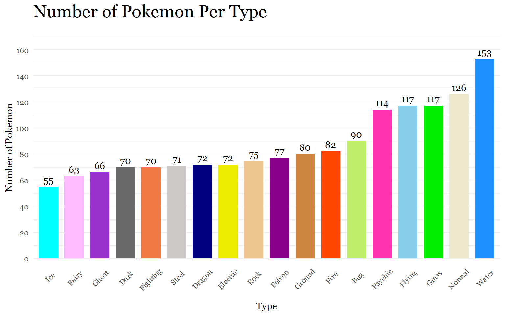
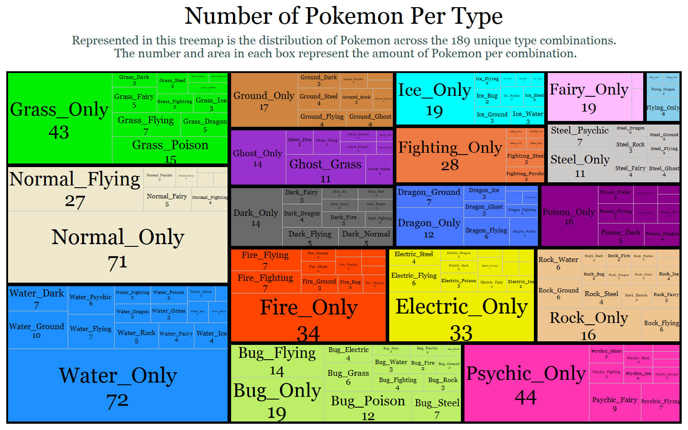
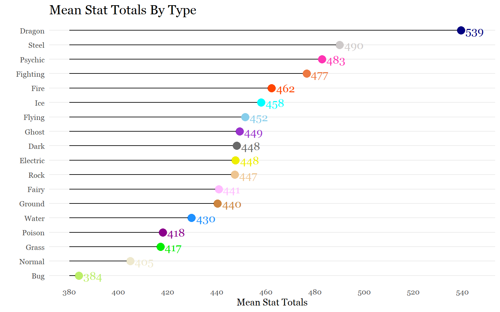
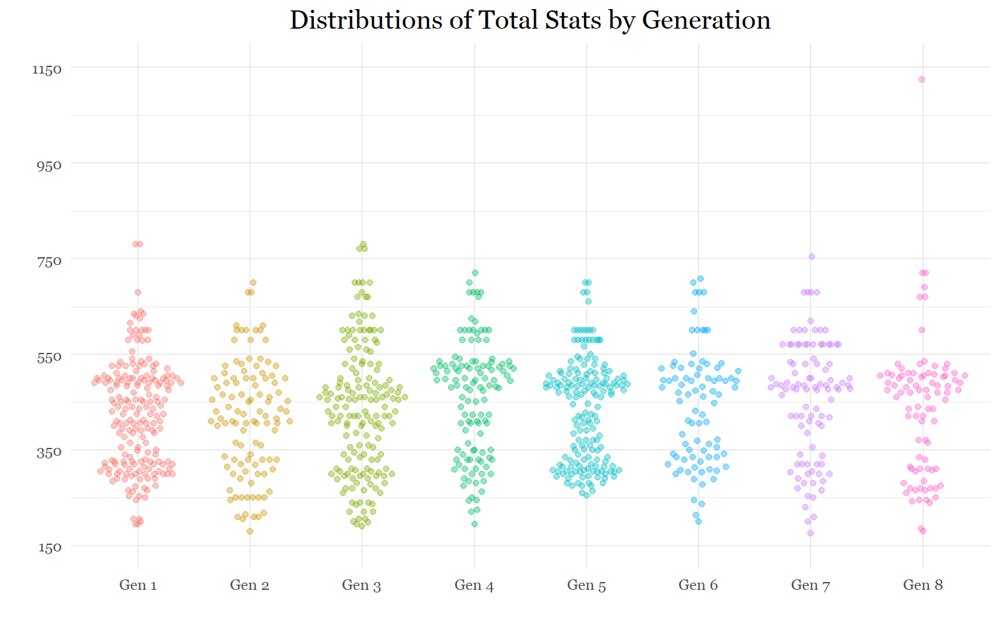
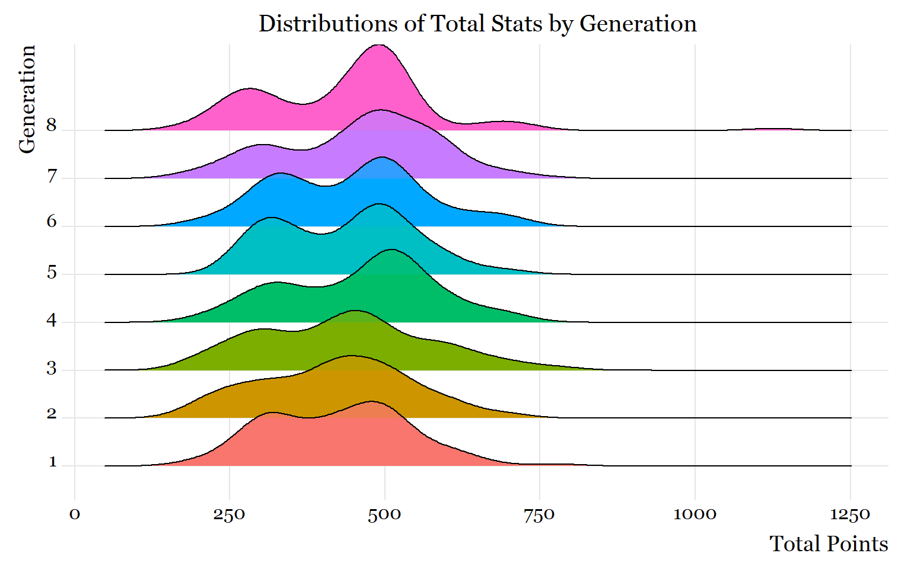
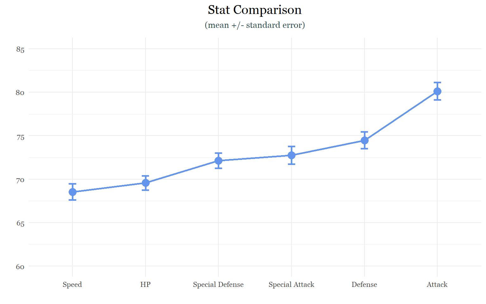
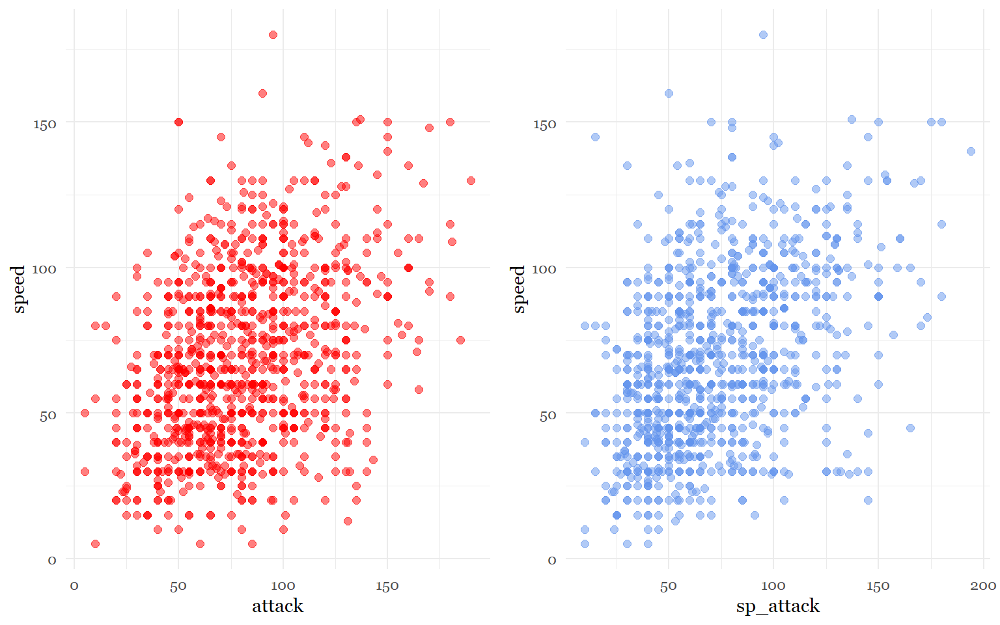

Exploring Pokemon
Introduction
After over 20 years of creating Pokemon content, Gamefreak has accumulated an abundance of Pokemon gaming data. The original 151 Pokemon that were created in the late 90s are now 892. With new types, forms and abilities being added with each new generation, the diversity in Pokemon data will continue to grow. Using data I obtained from Mario Tormo Romero’s Kaggle page and data I procured from conducting my own surveys (see sources), my hope with this project is to answer as many questions as my data science tool kit allows.
Goals
- Answer some statistical questions.
- Explore data sets using stats and data visualization tools.
Potential Questions and Tasks
Visualization Tasks and Questions
- Visualize the number of Pokemon per type.
- Are there more dual-types than mono-types?
- Are Pokemon with dual-types on average stronger than mono-type Pokemon?
- On average, what is the strongest and weakest type?
- Which types have the most of each stat?
- Are some generations on average stronger than others?
- Do newer generations have more variation in their stats?
- Which stats have the most and least variation?
Correlational Tasks
- What stats are correlated with each other?
- What stats are correlated with individual types?
- Is typing significantly correlated with stat total? Does typing predict overall stats?
- Is dual typing significantly correlated with stat total?
- Is typing correlated with sub-legendary /mystical/ legendary status?
- Which stat(s) are most useful for predicting legendary/ sub legendary/ mythical status?
- Do pokemon with better designs have higher stats?
Multivariate Studies
- What would a PCA cluster of Pokemon look like based on their stats?
Data Prep
The first step is to read in the data set.
setwd("C:/Users/laryl/Desktop/Data Sets")
pokemon_data_full<-read.csv("pokedex.csv")Next, I’m going to subset the data frame so that I can focus on the variables I am interested in. As a precaution, I am also going to clean up the data set to make sure there are no extra spaces in the variable names.
pokemon_data_clean <- pokemon_data_full[, c(2,3, 6, 9:13, 18:24)]
str(pokemon_data_clean)## 'data.frame': 1028 obs. of 15 variables:
## $ pokedex_number: int 1 2 3 3 4 5 6 6 6 7 ...
## $ name : chr "Bulbasaur" "Ivysaur" "Venusaur" "Mega Venusaur" ...
## $ generation : int 1 1 1 1 1 1 1 1 1 1 ...
## $ type_number : int 2 2 2 2 1 1 2 2 2 1 ...
## $ type_1 : chr "Grass" "Grass" "Grass" "Grass" ...
## $ type_2 : chr "Poison" "Poison" "Poison" "Poison" ...
## $ height_m : num 0.7 1 2 2.4 0.6 1.1 1.7 1.7 1.7 0.5 ...
## $ weight_kg : num 6.9 13 100 155.5 8.5 ...
## $ total_points : int 318 405 525 625 309 405 534 634 634 314 ...
## $ hp : int 45 60 80 80 39 58 78 78 78 44 ...
## $ attack : int 49 62 82 100 52 64 84 130 104 48 ...
## $ defense : int 49 63 83 123 43 58 78 111 78 65 ...
## $ sp_attack : int 65 80 100 122 60 80 109 130 159 50 ...
## $ sp_defense : int 65 80 100 120 50 65 85 85 115 64 ...
## $ speed : int 45 60 80 80 65 80 100 100 100 43 ...#Make sure there are no spacing issues
library(stringr)
str_replace_all(names(pokemon_data_clean), c(" " = ""))## [1] "pokedex_number" "name" "generation" "type_number"
## [5] "type_1" "type_2" "height_m" "weight_kg"
## [9] "total_points" "hp" "attack" "defense"
## [13] "sp_attack" "sp_defense" "speed"Okay, the data frame is ready for the first task!
Visualization Tasks
Task 1: Visualize number of Pokemon per type.
List of ways to visualize categorical frequency:
Bar plots (ideal)
Pie charts(not great)
Tree map (ideal for multiple levels)
Problem with data frame: Typing is separated into 2 columns in the data frame. I have to somehow find a way to count dual-type Pokemon twice.
Solution(s):
I can isolate the first column (main type) then append the second typing column onto that first column so that each Pokemon is counted twice for both typings.
I can create sub-categories involving dual-types (which is a lot of subcategories). It would be best to use tree map for this method. I can do this conditionally or by merging type 1 and type 2.
Trying Solution 1.
#Create two seperate data frames for each type
pokemon_types1<- data.frame(pokemon_data_clean$type_1)
pokemon_types2<- data.frame(pokemon_data_clean$type_2)
#Variables have to match to bind a dataframe to the base of another
names(pokemon_types1)[names(pokemon_types1) == "pokemon_data_clean.type_1"]<- "type"
names(pokemon_types2)[names(pokemon_types2) == "pokemon_data_clean.type_2"]<- "type"
pokemon_types1 <- rbind(pokemon_types1, pokemon_types2)
#Eliminate blanks that exist because some pokemon only have 1 type
pokemon_types<- data.frame(pokemon_types1[pokemon_types1$type != "",])
#Rename type variable
names(pokemon_types)[names(pokemon_types) == "pokemon_types1.pokemon_types1.type........."]<- "type"
#Let's see how many observations (pokemon) are in each type category
table(pokemon_types$type)##
## Bug Dark Dragon Electric Fairy Fighting Fire Flying
## 90 70 72 72 63 70 82 117
## Ghost Grass Ground Ice Normal Poison Psychic Rock
## 66 117 80 55 126 77 114 75
## Steel Water
## 71 153Now that every observation of a type has been accounted for, we are ready to visualize the data!
#Count number of Pokemon in each type category
library(dplyr)
plotdata<- pokemon_types %>%
count(type)
#Bar plot
library(ggplot2)
library(lattice)
library(latticeExtra)
library(scales)
library(ggthemes)
library(hrbrthemes)
library(extrafont)
ggplot(plotdata,
aes(x=reorder(type, n),
y= n, fill= type))+
geom_bar(stat = "identity", width = .75, alpha = 1) +
scale_y_continuous(breaks = seq(0,170,20),
limits = c(0, 170))+
scale_fill_manual(values = c("darkolivegreen2", "dimgray", "navyblue","yellow2","plum1",
"sienna2", "orangered", "skyblue", "darkorchid", "green2",
"tan3", "cyan", "cornsilk2", "darkmagenta", "maroon1", "burlywood2",
"snow3", "dodgerblue"))+
geom_text(aes(label = n), family = "Georgia",
vjust= -0.5) +
labs(x= "Type", y= "Number of Pokemon", title ="Number of Pokemon Per Type")+
theme_minimal()+
theme(axis.text.x = element_text(angle = 45, hjust = 0.65),
legend.position= "none",
panel.grid.major.x = element_blank(),
text = element_text(family = "Georgia"),
plot.title = element_text(size = 20))
The graph was a success. According to the Pokemon Database website (https://pokemondb.net/type/), the data appears to be fairly accurate. The actual number of Pokemon per type might vary because of recent Pokemon additions or because of omissions by the data set’s author.
Now, we will use a tree map to visualize dual-types and mono-types together. The goal is to count the type 1 and type 2 observations as one category to figure out the different combinations of types possible. To do this, I have to create a separate column with a combined type variable. Then I will map each combination as its own category. Finally, I will group those combinations by their primary type. For example, I want a Normal(type 1) & Flying (type 2) observation to be grouped with other Type 1 normal types because type 1 is typically considered the primary type.
#Create dataframe for the two types
pokemon_dual_data<-select(pokemon_data_clean, type_1, type_2)
#Count the Pokemon by both types or by their unique type combinations
plotdata2<-pokemon_dual_data %>%
count(type_1, type_2)
#Replace all blanks in type 2 with "Only"
plotdata2[plotdata2 == ""]<- "Only"
#Combine variables for labeling
plotdata2$type<- paste(plotdata2$type_1, plotdata2$type_2, sep = "_")
plotdata2$type_n<- paste(plotdata2$type, plotdata2$n, sep = "\n")
#Treemap
library(treemapify)
ggplot(plotdata2,
aes(fill = type_1,
area = n,
label = type_n,
subgroup = type_1)) +
geom_treemap() +
labs(title = "Number of Pokemon Per Type",
subtitle = "Represented in this treemap is the distribution of Pokemon across the 189 unique type combinations.\n The number and area in each box represent the amount of Pokemon per combination." )+
geom_treemap_text(colour = "black",
place = "centre",
family = "Georgia",
grow = F,
reflow = T,
min.size = 1.4) +
scale_fill_manual(values = c("darkolivegreen2", "dimgray", "royalblue1","yellow2","plum1",
"sienna2", "orangered", "skyblue", "darkorchid", "green2",
"tan3", "cyan", "cornsilk2", "darkmagenta", "maroon1", "burlywood2",
"snow3", "dodgerblue"))+
geom_treemap_subgroup_border(color = "black")+
theme_minimal()+
theme(legend.position = "none",
text = element_text(family = "Georgia"),
plot.title = element_text(size = 20,hjust = 0.5),
plot.subtitle = element_text(size = 10, color = "darkslategrey", margin = margin(b =10), hjust = 0.5))
Task 2: Are there more dual-types than mono-types?
The easiest way to figure out this question is to count the amount of mono-type Pokemon. By taking the dual data frame from above and removing the observations with blanks in the second type, we can find the number of mono-types and subtract it from the 1028 Pokemon total.
number_dual_types<- data.frame(pokemon_dual_data[pokemon_dual_data$type_2 != "",])
str(number_dual_types)## 'data.frame': 542 obs. of 2 variables:
## $ type_1: chr "Grass" "Grass" "Grass" "Grass" ...
## $ type_2: chr "Poison" "Poison" "Poison" "Poison" ...1028 total pokemon - 542 dual-types = 486 mono-types
But where is the fun in that. Let’s try to visualize this with a bar chart because why not? I am simply going to create a data frame where every blank in type 2 counts as the mono-type marker.
#Count all the Pokemon that have a blank as true and all of them that don't as false
plotdata3<-pokemon_dual_data %>%
count(type_2 == "")
str(plotdata3$`type_2 == ""`)## logi [1:2] FALSE TRUE#Recharacterize the logical data as characters
cols<- sapply(plotdata3, is.logical)
plotdata3[,cols] <- lapply(plotdata3[,cols], as.character)
#Rename true and false statements and rename second type variable
plotdata3[1,1]= "Dual-Type Pokemon"
plotdata3[2,1]= "Mono-Type Pokemon"
plotdata3<-plotdata3 %>%
rename(type_2 =`type_2 == ""`)
#Make sure the code worked
print(plotdata3)## type_2 n
## 1 Dual-Type Pokemon 542
## 2 Mono-Type Pokemon 486#Bar Plot
ggplot(plotdata3,
aes(x=type_2,
y= n, fill= type_2))+
geom_bar(stat = "identity", width = .30, alpha = 1) +
scale_y_continuous(breaks = seq(0,600,100),
limits = c(0, 600))+
scale_x_discrete(labels = c("Dual-Types", "Mono-Types"))+
geom_text(aes(label = n, family = "Georgia"),
vjust= -0.5) +
labs(x= "", y= "Number of Pokemon", title ="Number of Mono-Type Pokemon & Dual-Type Pokemon")+
scale_fill_viridis_d()+
theme_minimal()+
theme(legend.position = "none",
text = element_text(family = "Georgia"),
panel.grid.major.x = element_blank())
Task 3: Are pokemon with dual-types on average stronger than monotype pokemon?
At this point, I realized that I had a single column from the original data frame that told me whether a Pokemon had 1 or 2 types. ** Face Palm. ** But I am still proud of the work-around that I came up with in the previous task.
Now that we have this information it’s actually not hard to get the mean:
#Create a seperate dataframe for task
pokemon_dual_comparison<-pokemon_data_clean
#Recharacterize type_number variable as character
pokemon_dual_comparison$type_number<- as.character(pokemon_dual_comparison$type_number)
#Average the total points of mono-types and dual-types
pokemon_type_avg<- pokemon_dual_comparison %>%
select(type_number, total_points) %>%
group_by(type_number) %>%
summarize(mean_total = mean(total_points))
pokemon_type_avgSo dual-types are on average stronger than their mono-type counterparts. But I don’t think that really gives us the whole picture. So I am going to expand on this task to get a more holistic perspective using the summary statistics for the two categories.
monotype_vs_dualtype<- pokemon_dual_comparison %>%
select(type_number, total_points) %>%
group_by(type_number) %>%
summarize(n= n(),
mean_total = mean(total_points),
sd= sd(total_points),
se = sd / sqrt(n),
ci = qt(0.975, df = n - 1) * sd / sqrt(n))
monotype_vs_dualtypeAccording to this table, the stat total of dual-type Pokemon varies more than the stat total of mono-type Pokemon does across every metric, which is interesting because variation tends to decrease as sample size (n) increases. The standard deviation (SD) which represents the spread of observations/data around the mean is showing that there is a larger spread around the mean of dual-types. The standard error (SE) which is the standard deviation of the mean also shows slightly more variation for dual-types than mono-types. Lastly, the 95% confidence interval, which states that we are 95% sure that the true mean lies somewhere between 451.23- 471.98 (461.6 ± 10.373 ), shows slightly greater variation for dual-types. Thus, dual-types are not only, on average, stronger but also have a greater variety in stat totals than mono-types do. This makes sense because there are many weak un-evolved dual-types and then several examples of ultra powerful legendary dual-types like Mewtwo X, Mega Raquaza, and Black/ White Kyurem.
Because I am tired of using bar charts, let’s make a box plot!
#Boxplot
ggplot(pokemon_dual_comparison,
aes(y = total_points,
x = type_number,
colour = type_number))+
geom_boxplot(fill = "white",
size = 1,
outlier.shape = 19,
outlier.color = "black" )+
geom_jitter(alpha = 0.2)+
labs(title = "Mono-Type vs Dual-Type Distributions",
subtitle = "Represented in this figure is the total stat distribution of mono-types against \n the total stat distribution of dual-types. The jitter effect was included to help better \n compare the two distributions. All suspected outliers were highlighted and labeled.",
x ="",
y = "Stat Total")+
scale_colour_manual(values = c("yellow2", "purple3"))+
scale_x_discrete(labels = c("Mono-Types", "Dual-Types"))+
scale_y_continuous(breaks = seq(0,1200,200),
limits = c(100,1200))+
theme_minimal()+
theme(legend.position = "none",
text = element_text(family = "Georgia"),
panel.grid.major.x = element_blank(),
plot.title = element_text(size = 20,hjust = 0.5),
plot.subtitle = element_text(size = 10, color = "darkslategrey", margin = margin(b =10), hjust = 0.5))+
annotate(geom = "text", x = 2, y= 1125, label = "Eternatus Eternamax", hjust = -0.1, family = "Georgia")+
annotate(geom = "point", x = 2, y = 1125, colour = "purple3", size = 3)+
annotate(geom = "text", x = 1, y= 780, label = "Mewtwo Y", hjust = -0.1, vjust = -0.3, family = "Georgia")+
annotate(geom = "point", x = 1, y = 780, colour = "yellow3", size = 3)+
annotate(geom = "text", x = 1, y= 770, label = "Primal Kyogre", hjust = -0.10,vjust = 0.4, family = "Georgia")+
annotate(geom = "point", x = 1, y = 770, colour = "orange2", size = 3, alpha = 1)
Although we can draw similar conclusions about the difference in variation between the two categories, what makes this graph so interesting is the presence of outliers. While mono-types have 2 outliers that are around 50 points higher than the upper whisker of the distribution, dual-types have a single extreme outlier far above the plot’s upper whisker. Although box plots show statistics centered around medians, which are not drastically affected by outliers, we can use the information in this figure to draw conclusions about the summary statistics above. Because the dual-type summary statistics above are mean based, they probably are being affected by this single extreme outlier.
Task 4: Based on total stat average, what is the strongest and weakest type?
Alright, so at this stage we are probably at one of the most challenging tasks yet because we have Pokemon that count for more than one type, AGAIN.
Option 1: Try to think of a complicated conditional statement using dplyr that:
takes the average total_points of the 18 types in the type_1 column.
then takes of Pokemon with a second type so that their total_points can be averaged with the total_points of the first type.
Option 2:
Create a data frame with each Pokemon being counted twice for the first and second type like in task 1.
Next, eliminate all of the blanks and change the variable to “type.”
Then, I can take the mean total_points of each of the categories from that new, curated data frame.
Let’s try option 2:
#Create and prepare seperate dataframes for appending
firsttype_points<- data.frame(pokemon_data_clean[,c(5,9)])
secondtype_points<- data.frame(pokemon_data_clean[,c(6,9)])
names(firsttype_points)[names(firsttype_points) == "type_1"]<- "type"
names(secondtype_points)[names(secondtype_points) == "type_2"]<- "type"
#Combine dataframes and get rid of blanks
types_totalstat_avg<- rbind(firsttype_points, secondtype_points)
types_totalstat_avg<- data.frame(types_totalstat_avg[types_totalstat_avg$type != "",])
#Check Progress
table(types_totalstat_avg$type)##
## Bug Dark Dragon Electric Fairy Fighting Fire Flying
## 90 70 72 72 63 70 82 117
## Ghost Grass Ground Ice Normal Poison Psychic Rock
## 66 117 80 55 126 77 114 75
## Steel Water
## 71 153#Get means for 18 categories
mean_type_points<- types_totalstat_avg %>%
select(type, total_points) %>%
group_by(type) %>%
summarize(mean_total_points= mean(total_points))
mean_type_pointsOkay! That worked out really well, so now we are ready to visualize the strongest to weakest type. I’ll be using a Cleveland Dot Chart this time because there are 18 categories.
ggplot(mean_type_points,
aes(x = mean_total_points,
y = reorder(type, mean_total_points),
color = type))+
geom_point(size = 4)+
geom_segment(aes(x= 380,
xend = mean_total_points- 1.5,
y = reorder(type, mean_total_points),
yend = reorder(type, mean_total_points)),
color = "black") +
scale_color_manual(values = c("darkolivegreen2", "dimgray", "navyblue","yellow2","plum1",
"sienna2", "orangered", "skyblue", "darkorchid", "green2",
"tan3", "cyan", "cornsilk2", "darkmagenta", "maroon1", "burlywood2",
"snow3", "dodgerblue"))+
scale_x_continuous(breaks = seq(380,545,20),
limits = c(380, 545))+
labs (title = "Mean Stat Totals By Type",
x = "Mean Stat Totals",
y = "")+
geom_text(aes(label = round(mean_total_points, 0), family = "Georgia",
size = 10, hjust = -0.25))+
theme_minimal()+
theme(legend.position = "none",
text = element_text(family = "Georgia"),
plot.title = element_text(size = 15, margin(b = 10), family = "Georgia"),
panel.grid.minor = element_blank(),
panel.grid.major.x = element_blank()) 
Although some of the trends are obvious, seeing how they compare from a gamer’s perspective is interesting. Dragon Pokemon being, on average, the strongest makes sense because there are so many legendary Pokemon (which have the highest stats) that are dragons. Surprisingly, there is a 49 average point difference despite all the other type averages being relatively close to each other. I also had no idea ice Pokemon were so strong on average.
Task 5: Which types have the most of each stat?
For this task, what we will do is repeat all of the steps from the previous task. The only difference this time is that we will be doing this for the 6 stats the compose the total points.
# HP
firsttype_hp<- data.frame(pokemon_data_clean[,c(5,10)])
secondtype_hp<- data.frame(pokemon_data_clean[,c(6,10)])
names(firsttype_hp)[names(firsttype_hp) == "type_1"]<- "type"
names(secondtype_hp)[names(secondtype_hp) == "type_2"]<- "type"
types_hpstat_avg<- rbind(firsttype_hp, secondtype_hp)
types_hpstat_avg<- data.frame(types_hpstat_avg[types_hpstat_avg$type != "",])
mean_type_hp<- types_hpstat_avg %>%
select(type, hp) %>%
group_by(type) %>%
summarize(mean_hp_points= mean(hp))
# Attack
firsttype_att<- data.frame(pokemon_data_clean[,c(5,11)])
secondtype_att<- data.frame(pokemon_data_clean[,c(6,11)])
names(firsttype_att)[names(firsttype_att) == "type_1"]<- "type"
names(secondtype_att)[names(secondtype_att) == "type_2"]<- "type"
types_attstat_avg<- rbind(firsttype_att, secondtype_att)
types_attstat_avg<- data.frame(types_attstat_avg[types_attstat_avg$type != "",])
mean_type_att<- types_attstat_avg %>%
select(type, attack) %>%
group_by(type) %>%
summarize(mean_att_points= mean(attack))
# Defense
firsttype_def<- data.frame(pokemon_data_clean[,c(5,12)])
secondtype_def<- data.frame(pokemon_data_clean[,c(6,12)])
names(firsttype_def)[names(firsttype_def) == "type_1"]<- "type"
names(secondtype_def)[names(secondtype_def) == "type_2"]<- "type"
types_defstat_avg<- rbind(firsttype_def, secondtype_def)
types_defstat_avg<- data.frame(types_defstat_avg[types_defstat_avg$type != "",])
mean_type_def<- types_defstat_avg %>%
select(type, defense) %>%
group_by(type) %>%
summarize(mean_def_points= mean(defense))
# Special Attack
firsttype_sp.att<- data.frame(pokemon_data_clean[,c(5,13)])
secondtype_sp.att<- data.frame(pokemon_data_clean[,c(6,13)])
names(firsttype_sp.att)[names(firsttype_sp.att) == "type_1"]<- "type"
names(secondtype_sp.att)[names(secondtype_sp.att) == "type_2"]<- "type"
types_sp.attstat_avg<- rbind(firsttype_sp.att, secondtype_sp.att)
types_sp.attstat_avg<- data.frame(types_sp.attstat_avg[types_sp.attstat_avg$type != "",])
mean_type_sp.att<- types_sp.attstat_avg %>%
select(type, sp_attack) %>%
group_by(type) %>%
summarize(mean_sp.att_points= mean(sp_attack))
# Special Defense
firsttype_sp.def<- data.frame(pokemon_data_clean[,c(5,14)])
secondtype_sp.def<- data.frame(pokemon_data_clean[,c(6,14)])
names(firsttype_sp.def)[names(firsttype_sp.def) == "type_1"]<- "type"
names(secondtype_sp.def)[names(secondtype_sp.def) == "type_2"]<- "type"
types_sp.defstat_avg<- rbind(firsttype_sp.def, secondtype_sp.def)
types_sp.defstat_avg<- data.frame(types_sp.defstat_avg[types_sp.defstat_avg$type != "",])
mean_type_sp.def<- types_sp.defstat_avg %>%
select(type, sp_defense) %>%
group_by(type) %>%
summarize(mean_sp.def_points= mean(sp_defense))
# Speed
firsttype_speed<- data.frame(pokemon_data_clean[,c(5,15)])
secondtype_speed<- data.frame(pokemon_data_clean[,c(6,15)])
names(firsttype_speed)[names(firsttype_speed) == "type_1"]<- "type"
names(secondtype_speed)[names(secondtype_speed) == "type_2"]<- "type"
types_speedstat_avg<- rbind(firsttype_speed, secondtype_speed)
types_speedstat_avg<- data.frame(types_speedstat_avg[types_speedstat_avg$type != "",])
mean_type_speed<- types_speedstat_avg %>%
select(type, speed) %>%
group_by(type) %>%
summarize(mean_speed_points= mean(speed))Let’s make the plots for each stat!
#Hp
h<-ggplot(mean_type_hp,
aes(x= reorder(type, mean_hp_points),
y= mean_hp_points , fill = type))+
geom_bar(stat = "identity", width = .30, alpha = 1) +
scale_y_continuous(breaks = seq(0,95,10),
limits = c(0, 95))+
labs(x= "", y= "Mean HP Stat", title ="Mean HP Stat By Type")+
scale_fill_manual(values = c("darkolivegreen2", "dimgray", "navyblue","yellow2","plum1",
"sienna2", "orangered", "skyblue", "darkorchid", "green2",
"tan3", "cyan", "cornsilk2", "darkmagenta", "maroon1", "burlywood2",
"snow3", "dodgerblue"))+
theme_minimal()+
theme(legend.position = "none",
text = element_text(family = "Georgia"))+
coord_flip()
#Attack
a<-ggplot(mean_type_att,
aes(x= reorder(type, mean_att_points),
y= mean_att_points , fill = type))+
geom_bar(stat = "identity", width = .30, alpha = 1) +
scale_y_continuous(breaks = seq(0,110,10),
limits = c(0, 110))+
labs(x= "", y= "Mean Attack Stat", title ="Mean Attack Stat By Type")+
scale_fill_manual(values = c("darkolivegreen2", "dimgray", "navyblue","yellow2","plum1",
"sienna2", "orangered", "skyblue", "darkorchid", "green2",
"tan3", "cyan", "cornsilk2", "darkmagenta", "maroon1", "burlywood2",
"snow3", "dodgerblue"))+
theme_minimal()+
theme(legend.position = "none",
text = element_text(family = "Georgia"))+
coord_flip()
#Defense
d<-ggplot(mean_type_def,
aes(x= reorder(type, mean_def_points),
y= mean_def_points , fill = type))+
geom_bar(stat = "identity", width = .30, alpha = 1) +
scale_y_continuous(breaks = seq(0,120,10),
limits = c(0, 120))+
labs(x= "", y= "Mean Defense Stat", title ="Mean Defense Stat By Type")+
scale_fill_manual(values = c("darkolivegreen2", "dimgray", "navyblue","yellow2","plum1",
"sienna2", "orangered", "skyblue", "darkorchid", "green2",
"tan3", "cyan", "cornsilk2", "darkmagenta", "maroon1", "burlywood2",
"snow3", "dodgerblue"))+
theme_minimal()+
theme(legend.position = "none",
text = element_text(family = "Georgia"))+
coord_flip()
#Special Attack
spa<-ggplot(mean_type_sp.att,
aes(x= reorder(type, mean_sp.att_points),
y= mean_sp.att_points , fill = type))+
geom_bar(stat = "identity", width = .30, alpha = 1) +
scale_y_continuous(breaks = seq(0,110,10),
limits = c(0, 110))+
labs(x= "", y= "Mean Specail Attack Stat", title ="Mean Special Attack Stat By Type")+
scale_fill_manual(values = c("darkolivegreen2", "dimgray", "navyblue","yellow2","plum1",
"sienna2", "orangered", "skyblue", "darkorchid", "green2",
"tan3", "cyan", "cornsilk2", "darkmagenta", "maroon1", "burlywood2",
"snow3", "dodgerblue"))+
theme_minimal()+
theme(legend.position = "none",
text = element_text(family = "Georgia"))+
coord_flip()
#Special Defense
spd<-ggplot(mean_type_sp.def,
aes(x= reorder(type, mean_sp.def_points),
y= mean_sp.def_points , fill = type))+
geom_bar(stat = "identity", width = .30, alpha = 1) +
scale_y_continuous(breaks = seq(0,120,10),
limits = c(0, 120))+
labs(x= "", y= "Mean Special Defense Stat", title ="Mean Special Defense Stat By Type")+
scale_fill_manual(values = c("darkolivegreen2", "dimgray", "navyblue","yellow2","plum1",
"sienna2", "orangered", "skyblue", "darkorchid", "green2",
"tan3", "cyan", "cornsilk2", "darkmagenta", "maroon1", "burlywood2",
"snow3", "dodgerblue"))+
theme_minimal()+
theme(legend.position = "none",
text = element_text(family = "Georgia"))+
coord_flip()
#Speed
spe<-ggplot(mean_type_speed,
aes(x= reorder(type, mean_speed_points),
y= mean_speed_points , fill = type))+
geom_bar(stat = "identity", width = .30, alpha = 1) +
scale_y_continuous(breaks = seq(0,110,10),
limits = c(0, 110))+
labs(x= "", y= "Mean Speed Stat", title ="Mean Speed Stat By Type")+
scale_fill_manual(values = c("darkolivegreen2", "dimgray", "navyblue","yellow2","plum1",
"sienna2", "orangered", "skyblue", "darkorchid", "green2",
"tan3", "cyan", "cornsilk2", "darkmagenta", "maroon1", "burlywood2",
"snow3", "dodgerblue"))+
theme_minimal()+
theme(legend.position = "none",
text = element_text(family = "Georgia"))+
coord_flip()
#Let's pair the graphs up to save room
library(gridExtra)
grid.arrange(a,d)grid.arrange(spa,spd)grid.arrange(h,spe)
Task 6: Are some generations on average stronger than others?
To complete this task we are going to need summary stats for each generation.
pokemon_by_generations <- pokemon_data_clean %>%
select(generation, total_points) %>%
group_by(generation) %>%
summarize(n = n(),
mean_total = mean(total_points),
sd= sd(total_points),
se = sd / sqrt(n),
ci = qt(0.975, df = n - 1) * sd / sqrt(n))
pokemon_by_generationsAlthough there does not appear to be a general pattern that affects the summary statistics of the generations, Gamefreak does appear to be making less Pokemon than previous years. This makes sense because starting from generation 6, they began introducing alternate forms and evolutions for the older generations to accompany the new Pokemon. Although generation 1 only had 151 Pokemon to begin with, new evolutions and alternate forms introduced in later generations brought it to 192 Pokemon.
To visualize this we are going to use an SEM Plot:
#Recharacterize generation
pokemon_by_generations$generation<- as.character(pokemon_by_generations$generation)
#SEM Plot
ggplot(pokemon_by_generations,
aes(x = factor(generation, labels = c("Gen 1","Gen 2","Gen 3","Gen 4", "Gen 5", "Gen 6", "Gen 7", "Gen 8")),
y = mean_total,
group = 1))+
geom_point(size = 4, color = "orangered") +
geom_line(size = 1, color ="orangered") +
geom_errorbar(aes(ymin = mean_total- se,
ymax = mean_total + se),
width = .1,
size = 0.5,
color ="orangered") +
scale_y_continuous(breaks = seq(400,480,20),
limits = c(400, 480))+
labs(title = "Mean Stat Total by Generation",
subtitle = "This figure shows the mean stat total ± the standard error for each generation.",
x = "",
y = "")+
theme_minimal() +
theme(legend.position = "none",
text = element_text(family = "Georgia"),
plot.title = element_text(size = 20, margin(b = 10), hjust = 0.5, family = "Georgia"),
plot.subtitle = element_text(size = 10, color = "darkslategrey", margin = margin(b =10), hjust = 0.5))## Warning: Vectorized input to `element_text()` is not officially supported.
## Results may be unexpected or may change in future versions of ggplot2.
Task 7: Do newer generations have more variation in their total stat distributions?
The previous task showed that the last 3 generations have relatively more variation in their total stat distributions, partially because they have fewer Pokemon.
With so many ways to visualize a categorical variable against a quantitative variable, I will showcase two ways to visualize the variation in their distributions:
Beeswarm Plot
Ridgeline plot
#Beeswarm Plot
library(ggbeeswarm)
library(scales)
pokemon_data_clean$generation<- as.character(pokemon_data_clean$generation)
ggplot(pokemon_data_clean,
aes(x = factor(generation, labels = c("Gen 1","Gen 2","Gen 3","Gen 4",
"Gen 5", "Gen 6", "Gen 7", "Gen 8")),
y = total_points,
color = generation)) +
geom_quasirandom(alpha = 0.4,
size = 1.5) +
scale_y_continuous(breaks = seq(150,1150,200),
limits = c(150, 1150)) +
labs(title = "Distributions of Total Stats by Generation",
x = "",
y = "") +
theme_minimal() +
theme(legend.position = "none",
text = element_text(family = "Georgia"),
plot.title = element_text(size = 15, margin(b = 10), hjust = 0.5, family = "Georgia"),
plot.subtitle = element_text(size = 10, color = "darkslategrey", margin = margin(b =10), hjust = 0.5))
# Ridgeline Plot
library(ggridges)
ggplot(pokemon_data_clean,
aes(x = total_points,
y = generation,
fill = generation))+
labs(title = "Distributions of Total Stats by Generation",
x = "Total Points",
y= "Generation")+
geom_density_ridges() +
theme_ridges() +
geom_density_ridges(alpha = 0.5)+
labs("Distribution of Pokemon by Generation") +
theme(legend.position = "none",
text = element_text(family = "Georgia"),
plot.title = element_text(size = 15, margin(b = 10), hjust = 0.5, family = "Georgia"),
plot.subtitle = element_text(size = 10, color = "darkslategrey", margin = margin(b =10), hjust = 0.5))
Task 8: Which stats have the most and least variation?
For this task, I will take the summary statistics of each stat, create a data frame for each of them, and append them after changing their names.
#Summary Stats
hp_stat<- pokemon_data_clean %>%
select(hp) %>%
summarize(n = n(),
mean_stat = mean(hp),
sd= sd(hp),
se = sd / sqrt(n),
ci = qt(0.975, df = n - 1) * sd / sqrt(n))
attack_stat<- pokemon_data_clean %>%
select(attack) %>%
summarize(n = n(),
mean_stat = mean(attack),
sd= sd(attack),
se = sd / sqrt(n),
ci = qt(0.975, df = n - 1) * sd / sqrt(n))
defense_stat<- pokemon_data_clean %>%
select(defense) %>%
summarize(n = n(),
mean_stat = mean(defense),
sd= sd(defense),
se = sd / sqrt(n),
ci = qt(0.975, df = n - 1) * sd / sqrt(n))
sp.attack_stat<- pokemon_data_clean %>%
select(sp_attack) %>%
summarize(n = n(),
mean_stat = mean(sp_attack),
sd= sd(sp_attack),
se = sd / sqrt(n),
ci = qt(0.975, df = n - 1) * sd / sqrt(n))
sp.defense_stat<- pokemon_data_clean %>%
select(sp_defense) %>%
summarize(n = n(),
mean_stat = mean(sp_defense),
sd= sd(sp_defense),
se = sd / sqrt(n),
ci = qt(0.975, df = n - 1) * sd / sqrt(n))
speed_stat<- pokemon_data_clean %>%
select(speed) %>%
summarize(n = n(),
mean_stat = mean(speed),
sd= sd(speed),
se = sd / sqrt(n),
ci = qt(0.975, df = n - 1) * sd / sqrt(n))
#Appending
stat_comparison<- rbind(hp_stat, attack_stat, defense_stat, sp.attack_stat, sp.defense_stat,speed_stat)
name<- c("HP", "Attack", "Defense", "Special Attack", "Special Defense", "Speed")
name<-data.frame(name)
stat_comparison<-cbind(name,stat_comparison)
stat_comparisonInterestingly, the offensive stats (Attack and Special Attack) appear to be the most varied. This seems to suggest that when the game creators are choosing stat values for new Pokemon, they have a tendency to exagerate offensive capabilities more so than defensive ones. Why might that be? I don’t really know. The only thing I could think of is that offense is more exciting then defense or speed.
#SEM Plot
ggplot(stat_comparison,
aes(x = reorder(name, mean_stat),
y = mean_stat,
group = 1)) +
geom_point(size = 4, color = "cornflowerblue") +
geom_line(size = 1, color ="cornflowerblue") +
geom_errorbar(aes(ymin = mean_stat- se,
ymax = mean_stat + se),
width = .1,
size = 1,
color ="cornflowerblue") +
scale_y_continuous(breaks = seq(60,85, 5),
limits = c(60, 85))+
labs(title = "Stat Comparison",
subtitle = "(mean +/- standard error)",
x = "",
y = "")+
theme_minimal() +
theme(legend.position = "none",
text = element_text(family = "Georgia"),
plot.title = element_text(size = 15, margin(b = 10), hjust = 0.5, family = "Georgia"),
plot.subtitle = element_text(size = 10, color = "darkslategrey", margin = margin(b =10), hjust = 0.5))
Although the offensive stats appear to be the most varied, the variation between the stats is actually very similar. I think, more than anything else, this graph really highlights the large difference between the average attack stat and all the others.
Correlation Studies
The previous section was just a warm up and an opportunity to practice creating a variety of graphs. This section will focus on analyzing statistical trends in the data set.
Task 9: What stats are correlated with each other?
One of the easiest ways to get a preliminary look at the relationship between two variables is to use a correlation plot:
library(dplyr)
stat_study<-select(pokemon_data_clean, hp, attack, defense, sp_attack, sp_defense, speed)
stat_study_cor <- cor(stat_study, use = "complete.obs")
round(stat_study_cor,2)## hp attack defense sp_attack sp_defense speed
## hp 1.00 0.44 0.30 0.37 0.40 0.19
## attack 0.44 1.00 0.45 0.38 0.26 0.38
## defense 0.30 0.45 1.00 0.23 0.54 0.01
## sp_attack 0.37 0.38 0.23 1.00 0.51 0.44
## sp_defense 0.40 0.26 0.54 0.51 1.00 0.23
## speed 0.19 0.38 0.01 0.44 0.23 1.00library(ggcorrplot)
ggcorrplot(stat_study_cor,
hc.order = TRUE,
type = "lower",
lab = TRUE,
lab_size = 3.5,
outline.color = "white",
method = "circle",
colors = c("orangered","white" , "turquoise3"),
title = "Correlogram of Pokemon Stats",
ggtheme= theme_bw) ## Warning: `guides(<scale> = FALSE)` is deprecated. Please use `guides(<scale> =
## "none")` instead.This task could get more nuanced because we can take it a step further and investigate how multiple variables together could help predict another variable (Multiple regression). Additionally, we can check for interactions in the regressions because the presence of one extra variable could affect the relationship between two others.
Because there are six variables and several different combinations of regressions possible, we will examine a single combination. In the competative Pokemon battling sphere (yes, there is one), gamers introduced terms that describe the different roles Pokemon can fulfill in battle. For more information check out this link: https://pokemondb.net/pokebase/38940/what-are-the-different-kinds-pokemon-competitive-battling
These categories are useful to us because the roles tend to be defined by stat distributions. So Pokemon that have particular combinations of stats are grouped into these catgeories. If these categories have any truth to them, then we should be able to find stat combinations that are correlated. For our purposes, we will investigate the variables typically associated with the “sweeper” role: Pokemon with a high speed, high attack and/or high special attack.
To create models that are strong representations of the patterns seen in the data, we need to examine the relationships between the variables in question using scatter plots first. This will help us identify strange features in the data like outliers or non-linearity between variables.
#Scatter Plot for speed vs attack
ap<-ggplot(pokemon_data_clean, aes(x=attack, y = speed)) +
geom_point(shape= 19, size= 2, color = "red", alpha = .5)+
theme_minimal()+
theme(legend.position = "none",
text = element_text(family = "Georgia"))
#Scatter Plot for speed vs sp.attack
spap<-ggplot(pokemon_data_clean, aes(x= sp_attack, y = speed))+
geom_point(shape= 19, size= 2, color ="cornflowerblue", alpha = .5)+
theme_minimal()+
theme(legend.position = "none",
text = element_text(family = "Georgia"))
grid.arrange(ap,spap, ncol=2)
The explanatory variables (attack, sp_attack) seem to have an expected linear relationship with the response variable (speed). No interesting features seem to have been revealed, meaning we can continue to the regression modeling phase.
Let’s run a few regressions to investigate the significance between the “sweeper” variables:
#linear regression attack vs speed
fit_sweepers_a<- lm(speed ~ attack, data = pokemon_data_clean)
summary(fit_sweepers_a)##
## Call:
## lm(formula = speed ~ attack, data = pokemon_data_clean)
##
## Residuals:
## Min 1Q Median 3Q Max
## -73.382 -20.589 -1.215 19.496 106.246
##
## Coefficients:
## Estimate Std. Error t value Pr(>|t|)
## (Intercept) 40.42908 2.29605 17.61 <2e-16 ***
## attack 0.35079 0.02657 13.20 <2e-16 ***
## ---
## Signif. codes: 0 '***' 0.001 '**' 0.01 '*' 0.05 '.' 0.1 ' ' 1
##
## Residual standard error: 27.57 on 1026 degrees of freedom
## Multiple R-squared: 0.1452, Adjusted R-squared: 0.1444
## F-statistic: 174.3 on 1 and 1026 DF, p-value: < 2.2e-16#linear regression special attack vs speed
fit_sweepers_spa<- lm(speed ~ sp_attack, data = pokemon_data_clean)
summary(fit_sweepers_spa)##
## Call:
## lm(formula = speed ~ sp_attack, data = pokemon_data_clean)
##
## Residuals:
## Min 1Q Median 3Q Max
## -77.730 -19.285 -1.098 17.938 102.470
##
## Coefficients:
## Estimate Std. Error t value Pr(>|t|)
## (Intercept) 39.15073 2.03521 19.24 <2e-16 ***
## sp_attack 0.40399 0.02553 15.83 <2e-16 ***
## ---
## Signif. codes: 0 '***' 0.001 '**' 0.01 '*' 0.05 '.' 0.1 ' ' 1
##
## Residual standard error: 26.73 on 1026 degrees of freedom
## Multiple R-squared: 0.1962, Adjusted R-squared: 0.1954
## F-statistic: 250.5 on 1 and 1026 DF, p-value: < 2.2e-16#multiple regression attack & special attack vs speed
fit_sweepers<- lm(speed ~ attack + sp_attack, data = pokemon_data_clean)
summary(fit_sweepers)##
## Call:
## lm(formula = speed ~ attack + sp_attack, data = pokemon_data_clean)
##
## Residuals:
## Min 1Q Median 3Q Max
## -80.706 -18.278 -0.539 17.828 100.957
##
## Coefficients:
## Estimate Std. Error t value Pr(>|t|)
## (Intercept) 26.96255 2.42913 11.100 <2e-16 ***
## attack 0.22991 0.02688 8.553 <2e-16 ***
## sp_attack 0.31831 0.02663 11.953 <2e-16 ***
## ---
## Signif. codes: 0 '***' 0.001 '**' 0.01 '*' 0.05 '.' 0.1 ' ' 1
##
## Residual standard error: 25.84 on 1025 degrees of freedom
## Multiple R-squared: 0.2498, Adjusted R-squared: 0.2483
## F-statistic: 170.6 on 2 and 1025 DF, p-value: < 2.2e-16#multiple regression attack & special attack vs speed with interaction included
fit_sweepers1<- lm(speed ~ attack + sp_attack + attack*sp_attack, data = pokemon_data_clean)
summary(fit_sweepers1)##
## Call:
## lm(formula = speed ~ attack + sp_attack + attack * sp_attack,
## data = pokemon_data_clean)
##
## Residuals:
## Min 1Q Median 3Q Max
## -78.198 -18.669 -0.217 17.659 100.590
##
## Coefficients:
## Estimate Std. Error t value Pr(>|t|)
## (Intercept) 18.6001920 4.5871795 4.055 5.40e-05 ***
## attack 0.3307608 0.0540868 6.115 1.37e-09 ***
## sp_attack 0.4389963 0.0621682 7.061 3.04e-12 ***
## attack:sp_attack -0.0013648 0.0006355 -2.148 0.032 *
## ---
## Signif. codes: 0 '***' 0.001 '**' 0.01 '*' 0.05 '.' 0.1 ' ' 1
##
## Residual standard error: 25.79 on 1024 degrees of freedom
## Multiple R-squared: 0.2531, Adjusted R-squared: 0.2509
## F-statistic: 115.7 on 3 and 1024 DF, p-value: < 2.2e-16From these models, we can see that both explanatory variables are significantly correlated with the response variable. According to the multiple R squared value in the first model, we learned that about 14.5 percent of the variation in speed could be explained by the variation in attack. In the second model, 19.6 percent of the variation in speed can be explained by variation in special attack. Thus, much like the results from the correlation plot, special attack and speed are a little more correlated than attack and speed are.
The first multiple regression shows that about 25 percent of the variation in speed can be accounted for by the variation in attack and speed together. The last model shows another multiple regression which, this time, controls for an interaction between the two variables. This interaction, if significant, could mean that having more or less attack stat could affect how strongly special attack and speed or correlated. In our last model, we can see that although the interaction effect is slightly significant, it does not substantially help predict any more variation than our first multiple regression model. In the gaming context, this makes sense because having more of one of these offensive stats does not guarantee that a Pokemon will be fast and good at the other. Often times, sweepers are good at speed and one of the offensive stats. Although, mixed offensive sweepers do exist, special attacking or physical attacking sweepers are more common.
At this point, either of the multiple regression models could work. However, since the interaction effect in the second model is so small, I will continue with the more general model.
But before moving forward, we need to check whether we violated any of the assumptions that come with building regression models.
#Checking for Normaility
residuals(fit_sweepers)qqnorm(residuals(fit_sweepers), col= "slateblue" )
qqline(residuals(fit_sweepers))
#Checking for Constant Conditional SDs and Linearity
plot(fitted(fit_sweepers),resid(fit_sweepers), col= "slateblue", pch= 19)
abline(h=0) None of the assumptions seem to have been violated, so we can move to the last stage and plot our multiple regression.
library(visreg)
visreg(fit_sweepers, "sp_attack", by= "attack", gg= TRUE,
line= list(col ="slateblue1"),
fill = list(col = "grey85"))+
theme_bw()+
labs(title = "Sweepers Multiple Regression")+
theme(text = element_text(family = "Georgia"),
plot.title = element_text(size = 13, margin(b = 10), hjust = 0.5, family = "Georgia"))Task 10: What stats are correlated with each individual types?
Earlier, I showed which types had the most points, on average, for each stat. Now, I want to know which stats are correlated with particular types. Specifically, I want to investigate if specific stat combinations could be used to predict whether a Pokemon is a particular type. One of the best ways to accomplish this is to use logistic regressions.
Since there are so many types, I am going to pick only 5 to study: water, dragon, fire, ice, and steel.
Step 1, like before I need a data frame that merges type_ 1 and type_2 into a single variable to account for each time a type is observed:
predict_type1<- data.frame(pokemon_data_clean[,c(5,9:15)])
predict_type2<- data.frame(pokemon_data_clean[,c(6,9:15)])
names(predict_type1)[names(predict_type1) == "type_1"]<- "type"
names(predict_type2)[names(predict_type2) == "type_2"]<- "type"
predict_type<- rbind(predict_type1, predict_type2)
predict_type<- data.frame(predict_type[predict_type$type != "",])
str(predict_type)## 'data.frame': 1570 obs. of 8 variables:
## $ type : chr "Grass" "Grass" "Grass" "Grass" ...
## $ total_points: int 318 405 525 625 309 405 534 634 634 314 ...
## $ hp : int 45 60 80 80 39 58 78 78 78 44 ...
## $ attack : int 49 62 82 100 52 64 84 130 104 48 ...
## $ defense : int 49 63 83 123 43 58 78 111 78 65 ...
## $ sp_attack : int 65 80 100 122 60 80 109 130 159 50 ...
## $ sp_defense : int 65 80 100 120 50 65 85 85 115 64 ...
## $ speed : int 45 60 80 80 65 80 100 100 100 43 ...Because logistic regressions require the response variable to be bivariate, I need to change the data so that the logistic regression considers only two type categories: the type itself and all the other types. The two categories need to be numeric, so we will say that being the specific type is = 1, otherwise it is = 0.
#Water
predict_water<- mutate(predict_type,
type = ifelse(type == "Water", 1, 0))
table(predict_water$type) ##
## 0 1
## 1417 153#Fire
predict_fire<- mutate(predict_type,
type = ifelse(type == "Fire", 1, 0))
table(predict_fire$type) ##
## 0 1
## 1488 82#Dragon
predict_dragon<- mutate(predict_type,
type = ifelse(type == "Dragon", 1, 0))
table(predict_dragon$type) ##
## 0 1
## 1498 72#Ice
predict_ice<- mutate(predict_type,
type = ifelse(type == "Ice", 1, 0))
table(predict_ice$type) ##
## 0 1
## 1515 55#Steel
predict_steel<- mutate(predict_type,
type = ifelse(type == "Steel", 1, 0))
table(predict_steel$type) ##
## 0 1
## 1499 71Now, I am going to create logistic regression models that will reveal the stats most correlated with each type.
#Water
fit_predict_water<-glm(type~ hp+ attack + defense+ sp_attack + sp_defense + speed, family= binomial, data = predict_water)
summary(fit_predict_water)##
## Call:
## glm(formula = type ~ hp + attack + defense + sp_attack + sp_defense +
## speed, family = binomial, data = predict_water)
##
## Deviance Residuals:
## Min 1Q Median 3Q Max
## -0.7010 -0.4854 -0.4399 -0.3834 2.5567
##
## Coefficients:
## Estimate Std. Error z value Pr(>|z|)
## (Intercept) -1.674333 0.324341 -5.162 2.44e-07 ***
## hp 0.003500 0.003638 0.962 0.33595
## attack -0.010449 0.003758 -2.780 0.00543 **
## defense 0.003222 0.003616 0.891 0.37288
## sp_attack 0.005619 0.003426 1.640 0.10096
## sp_defense -0.005694 0.004333 -1.314 0.18878
## speed -0.003365 0.003555 -0.947 0.34386
## ---
## Signif. codes: 0 '***' 0.001 '**' 0.01 '*' 0.05 '.' 0.1 ' ' 1
##
## (Dispersion parameter for binomial family taken to be 1)
##
## Null deviance: 1003.07 on 1569 degrees of freedom
## Residual deviance: 989.63 on 1563 degrees of freedom
## AIC: 1003.6
##
## Number of Fisher Scoring iterations: 5#fire
fit_predict_fire<-glm(type~ hp+ attack + defense+ sp_attack + sp_defense + speed, family= binomial, data = predict_fire)
summary(fit_predict_fire)##
## Call:
## glm(formula = type ~ hp + attack + defense + sp_attack + sp_defense +
## speed, family = binomial, data = predict_fire)
##
## Deviance Residuals:
## Min 1Q Median 3Q Max
## -1.1580 -0.3521 -0.2949 -0.2482 2.7702
##
## Coefficients:
## Estimate Std. Error z value Pr(>|z|)
## (Intercept) -2.925784 0.463562 -6.312 2.76e-10 ***
## hp -0.003158 0.005682 -0.556 0.5783
## attack 0.001543 0.004585 0.337 0.7364
## defense -0.009756 0.005769 -1.691 0.0908 .
## sp_attack 0.017982 0.004343 4.141 3.46e-05 ***
## sp_defense -0.007631 0.006316 -1.208 0.2270
## speed -0.000860 0.004536 -0.190 0.8496
## ---
## Signif. codes: 0 '***' 0.001 '**' 0.01 '*' 0.05 '.' 0.1 ' ' 1
##
## (Dispersion parameter for binomial family taken to be 1)
##
## Null deviance: 643.79 on 1569 degrees of freedom
## Residual deviance: 616.83 on 1563 degrees of freedom
## AIC: 630.83
##
## Number of Fisher Scoring iterations: 6#Dragon
fit_predict_dragon<-glm(type~ hp+ attack + defense+ sp_attack + sp_defense + speed, family= binomial, data = predict_dragon)
summary(fit_predict_dragon)##
## Call:
## glm(formula = type ~ hp + attack + defense + sp_attack + sp_defense +
## speed, family = binomial, data = predict_dragon)
##
## Deviance Residuals:
## Min 1Q Median 3Q Max
## -1.1756 -0.3322 -0.2578 -0.1850 3.0187
##
## Coefficients:
## Estimate Std. Error z value Pr(>|z|)
## (Intercept) -5.972832 0.533440 -11.197 < 2e-16 ***
## hp 0.011563 0.004336 2.667 0.00766 **
## attack 0.007261 0.004440 1.635 0.10199
## defense 0.004819 0.004919 0.980 0.32725
## sp_attack 0.012630 0.004269 2.959 0.00309 **
## sp_defense -0.004000 0.005961 -0.671 0.50221
## speed 0.003089 0.004760 0.649 0.51634
## ---
## Signif. codes: 0 '***' 0.001 '**' 0.01 '*' 0.05 '.' 0.1 ' ' 1
##
## (Dispersion parameter for binomial family taken to be 1)
##
## Null deviance: 584.48 on 1569 degrees of freedom
## Residual deviance: 536.04 on 1563 degrees of freedom
## AIC: 550.04
##
## Number of Fisher Scoring iterations: 6#Ice
fit_predict_ice<-glm(type~ hp+ attack + defense+ sp_attack + sp_defense + speed, family= binomial, data = predict_ice)
summary(fit_predict_ice)##
## Call:
## glm(formula = type ~ hp + attack + defense + sp_attack + sp_defense +
## speed, family = binomial, data = predict_ice)
##
## Deviance Residuals:
## Min 1Q Median 3Q Max
## -0.6964 -0.2781 -0.2579 -0.2420 2.9183
##
## Coefficients:
## Estimate Std. Error z value Pr(>|z|)
## (Intercept) -3.6778779 0.5275513 -6.972 3.13e-12 ***
## hp 0.0081322 0.0047481 1.713 0.0868 .
## attack 0.0023920 0.0054146 0.442 0.6587
## defense -0.0059962 0.0060678 -0.988 0.3231
## sp_attack -0.0008846 0.0053041 -0.167 0.8676
## sp_defense 0.0045068 0.0067890 0.664 0.5068
## speed -0.0035452 0.0055488 -0.639 0.5229
## ---
## Signif. codes: 0 '***' 0.001 '**' 0.01 '*' 0.05 '.' 0.1 ' ' 1
##
## (Dispersion parameter for binomial family taken to be 1)
##
## Null deviance: 476.72 on 1569 degrees of freedom
## Residual deviance: 472.17 on 1563 degrees of freedom
## AIC: 486.17
##
## Number of Fisher Scoring iterations: 6#Steel
fit_predict_steel<-glm(type~ hp+ attack + defense+ sp_attack + sp_defense + speed, family= binomial, data = predict_steel)
summary(fit_predict_steel)##
## Call:
## glm(formula = type ~ hp + attack + defense + sp_attack + sp_defense +
## speed, family = binomial, data = predict_steel)
##
## Deviance Residuals:
## Min 1Q Median 3Q Max
## -1.6499 -0.2869 -0.2141 -0.1726 2.8277
##
## Coefficients:
## Estimate Std. Error z value Pr(>|z|)
## (Intercept) -4.472527 0.560886 -7.974 1.54e-15 ***
## hp -0.016669 0.007022 -2.374 0.01760 *
## attack 0.014875 0.004876 3.051 0.00228 **
## defense 0.024566 0.004026 6.102 1.04e-09 ***
## sp_attack -0.002481 0.004865 -0.510 0.61004
## sp_defense -0.003952 0.004889 -0.808 0.41887
## speed -0.007006 0.005284 -1.326 0.18485
## ---
## Signif. codes: 0 '***' 0.001 '**' 0.01 '*' 0.05 '.' 0.1 ' ' 1
##
## (Dispersion parameter for binomial family taken to be 1)
##
## Null deviance: 578.39 on 1569 degrees of freedom
## Residual deviance: 490.83 on 1563 degrees of freedom
## AIC: 504.83
##
## Number of Fisher Scoring iterations: 6The findings here are really interesting. The water model summary shows that attack is the most significant stat in predicting water typing. Specifically, it is negatively correlated with water typing. This is a little surprising because I was expecting water Pokemon to be associated with special attack and special defense. Next, special attack is by far the biggest predictor of fire typing. For Dragon Pokemon, hp and special attack are the biggest predictors. In the ice model, surprisingly, hp is the best predictor of ice typing, despite it not being very significant. Finally, for steel, defense, attack, and hp are the most significant predictors in that order. Interestingly, hp is negatively correlated with steel typing.
Let’s now rebuild these models and see how well they predict the 5 typings:
#Water
fit_predict_water1<-glm(type~ attack, family= binomial, data = predict_water)
summary(fit_predict_water1)##
## Call:
## glm(formula = type ~ attack, family = binomial, data = predict_water)
##
## Deviance Residuals:
## Min 1Q Median 3Q Max
## -0.5917 -0.4845 -0.4417 -0.3949 2.4008
##
## Coefficients:
## Estimate Std. Error z value Pr(>|z|)
## (Intercept) -1.614842 0.224513 -7.193 6.35e-13 ***
## attack -0.007802 0.002763 -2.824 0.00474 **
## ---
## Signif. codes: 0 '***' 0.001 '**' 0.01 '*' 0.05 '.' 0.1 ' ' 1
##
## (Dispersion parameter for binomial family taken to be 1)
##
## Null deviance: 1003.07 on 1569 degrees of freedom
## Residual deviance: 994.74 on 1568 degrees of freedom
## AIC: 998.74
##
## Number of Fisher Scoring iterations: 5#Fire
fit_predict_fire1<-glm(type~ sp_attack, family= binomial, data = predict_fire)
summary(fit_predict_fire1)##
## Call:
## glm(formula = type ~ sp_attack, family = binomial, data = predict_fire)
##
## Deviance Residuals:
## Min 1Q Median 3Q Max
## -0.6404 -0.3567 -0.2969 -0.2626 2.7389
##
## Coefficients:
## Estimate Std. Error z value Pr(>|z|)
## (Intercept) -3.915246 0.297822 -13.146 < 2e-16 ***
## sp_attack 0.012551 0.003132 4.007 6.14e-05 ***
## ---
## Signif. codes: 0 '***' 0.001 '**' 0.01 '*' 0.05 '.' 0.1 ' ' 1
##
## (Dispersion parameter for binomial family taken to be 1)
##
## Null deviance: 643.79 on 1569 degrees of freedom
## Residual deviance: 628.43 on 1568 degrees of freedom
## AIC: 632.43
##
## Number of Fisher Scoring iterations: 6#Dragon
fit_predict_dragon1<-glm(type~ hp+ sp_attack, family= binomial, data = predict_dragon)
summary(fit_predict_dragon1)##
## Call:
## glm(formula = type ~ hp + sp_attack, family = binomial, data = predict_dragon)
##
## Deviance Residuals:
## Min 1Q Median 3Q Max
## -1.1502 -0.3325 -0.2540 -0.2005 2.9625
##
## Coefficients:
## Estimate Std. Error z value Pr(>|z|)
## (Intercept) -5.360775 0.416827 -12.861 < 2e-16 ***
## hp 0.013240 0.003635 3.643 0.00027 ***
## sp_attack 0.015361 0.003479 4.415 1.01e-05 ***
## ---
## Signif. codes: 0 '***' 0.001 '**' 0.01 '*' 0.05 '.' 0.1 ' ' 1
##
## (Dispersion parameter for binomial family taken to be 1)
##
## Null deviance: 584.48 on 1569 degrees of freedom
## Residual deviance: 543.03 on 1567 degrees of freedom
## AIC: 549.03
##
## Number of Fisher Scoring iterations: 6#Ice
fit_predict_ice1<-glm(type~ hp, family= binomial, data = predict_ice)
summary(fit_predict_ice1)##
## Call:
## glm(formula = type ~ hp, family = binomial, data = predict_ice)
##
## Deviance Residuals:
## Min 1Q Median 3Q Max
## -0.5490 -0.2744 -0.2582 -0.2429 2.7198
##
## Coefficients:
## Estimate Std. Error z value Pr(>|z|)
## (Intercept) -3.921145 0.353186 -11.102 <2e-16 ***
## hp 0.008254 0.004245 1.944 0.0518 .
## ---
## Signif. codes: 0 '***' 0.001 '**' 0.01 '*' 0.05 '.' 0.1 ' ' 1
##
## (Dispersion parameter for binomial family taken to be 1)
##
## Null deviance: 476.72 on 1569 degrees of freedom
## Residual deviance: 473.44 on 1568 degrees of freedom
## AIC: 477.44
##
## Number of Fisher Scoring iterations: 6#Steel
fit_predict_steel1<-glm(type~ hp + attack + defense, family= binomial, data = predict_steel)
summary(fit_predict_steel1)##
## Call:
## glm(formula = type ~ hp + attack + defense, family = binomial,
## data = predict_steel)
##
## Deviance Residuals:
## Min 1Q Median 3Q Max
## -1.5408 -0.2894 -0.2197 -0.1734 2.9206
##
## Coefficients:
## Estimate Std. Error z value Pr(>|z|)
## (Intercept) -4.999325 0.505492 -9.890 < 2e-16 ***
## hp -0.020672 0.006542 -3.160 0.00158 **
## attack 0.012483 0.004237 2.946 0.00322 **
## defense 0.025271 0.003242 7.796 6.4e-15 ***
## ---
## Signif. codes: 0 '***' 0.001 '**' 0.01 '*' 0.05 '.' 0.1 ' ' 1
##
## (Dispersion parameter for binomial family taken to be 1)
##
## Null deviance: 578.39 on 1569 degrees of freedom
## Residual deviance: 495.23 on 1566 degrees of freedom
## AIC: 503.23
##
## Number of Fisher Scoring iterations: 6The water and fire models did not change much in terms of significance. In the dragon model, hp did become a little more significant. Although the p-value of the hp stat in the ice model improved, it still did not go under the 0.5 alpha value needed for significance. For the steel model, defense and hp became a little more significant while attack remained about the same.
At this point in the analysis, if we really wanted to assess how well our logistic models predicted typing, we would create confusion matrices to assess each model’s “accuracy” and “recall”. Accuracy would be a decent measure of our models because it measures how well a model classifies both the specified type and the non-specified types. Recall would be another good metric to measure because it calculates how many of the actual specified type were correctly guessed. However, because our goal for this task was to find out if typing was correlated with specific stats, this kind of analysis lies outside of the scope of what we were planning to do.
But we can still do a cursory validation analysis for one of our models for fun:
pred_log_odds_s<- predict(fit_predict_steel1)
pred_prob_s<- 1/(1 + exp(-pred_log_odds_s))
prob_steel<- pred_prob_s >= .5
table(Predicted_Value = prob_steel, Actual_Value = predict_steel$type)## Actual_Value
## Predicted_Value 0 1
## FALSE 1495 68
## TRUE 4 3The accuracy for this model (true positive + true negative)/ (true positive + true negative + false positive + false negative) is equal to 1498/ 1570= 95.4 percent. This, on the surface, sounds great, but there is one problem: our model does not do a good job of correctly predicting steel Pokemon. If we look at recall, the amount of Pokemon our model predicted true divided by the actual number of steel Pokemon you get 3/71 or 4 percent. This means that my model is too conservative, meaning it is really good at detecting non-steel Pokemon but over-categorizes the observations as non-steel Pokemon. Decreasing the 0.5 threshold value would relax the filter and improve the model’s ability to classify Pokemon as steel Pokemon correctly.
All that is left to do now is plot a few of the models:
#Water Logistic Regression
visreg(fit_predict_water1, "attack",
rug = FALSE ,
xlab = "Attack",
ylab = "Probabiltiy of Being a Water Type",
line= list(col ="dodgerblue"),
fill = list(fill = "lightblue"),
scale="response",
gg = TRUE)+
theme_bw()+
labs(title = "Logistic Regression Prediction of Water Typing")+
theme(legend.position = "none",
text = element_text(family = "Georgia"),
plot.title = element_text(size = 15, margin(b = 10), hjust = 0.5, family = "Georgia"))
#Fire Logistic Regression
visreg(fit_predict_fire1, "sp_attack",
rug = FALSE ,
xlab = "Special Attack",
ylab = "Probabiltiy of Being a Fire Type",
line= list(col ="orangered"),
fill = list(fill = "lightpink"),
scale="response",
gg = TRUE)+
theme_bw()+
labs(title = "Logistic Regression Prediction of Fire Typing")+
theme(legend.position = "none",
text = element_text(family = "Georgia"),
plot.title = element_text(size = 15, margin(b = 10), hjust = 0.5, family = "Georgia"))
#Steel Logistic Regression
visreg(fit_predict_steel1, "defense", by = "attack",
rug = FALSE ,
xlab = "Defense",
ylab = "Probabiltiy of Being a Steel Type",
line= list(col ="black"),
fill = list(fill = "grey80"),
scale="response",
gg = TRUE)+
theme_bw()+
labs(title = "Logistic Regression Prediction of Steel Typing")+
theme(legend.position = "none",
text = element_text(family = "Georgia"),
plot.title = element_text(size = 15, margin(b = 10), hjust = 0.5, family = "Georgia"))visreg(fit_predict_steel1, "defense", by = "hp",
rug = FALSE ,
xlab = "Defense",
ylab = "Probabiltiy of Being a Steel Type",
line= list(col ="black"),
fill = list(fill = "grey80"),
scale="response",
gg = TRUE)+
theme_bw()+
labs(title = "Logistic Regression Prediction of Steel Typing")+
theme(legend.position = "none",
text = element_text(family = "Georgia"),
plot.title = element_text(size = 15, margin(b = 10), hjust = 0.5, family = "Georgia"))If we take a look at the first model, if you had an attack stat of approximately 75, there is a 10 percent chance that you could be a water Pokemon. This makes sense because water Pokemon are usually special attackers. According to the second model, if a Pokemon had a special attack stat of 150, there would be over a 10 percent chance of it being a fire type. For the steel Pokemon model, we can clearly see that the more defense you have, the more likely it is that you are a steel Pokemon. Additionally, if you also had high attack your chances of being a steel Pokemon would increase slightly as well. Conversely, we can see that the more hp you have, the less likely it is that you are a steel Pokemon.
Although the steel model, did not account for interactions, these plots may be showing signs of interaction effects. Because this task was meant to highlight possible correlations, more complex models were not considered. A future study could definitely take this a few steps further to investigate stat correlations with more types with more attention to the complexity of those correlations.
Task 13: Is typing correlated with sub-legendary /mythical/ legendary status?
Before getting started, it is important to understand what the status variable in this data set represents. There are 4 statuses: legendary, sub-legendary, mythical, and normal. Legendary Pokemon and sub-legendary, are typically very rare and powerful Pokemon that usually represent certain philosophical, mythical, or cultural ideas. Mythical Pokemon, which are a similar category of special Pokemon, are considered to be more elusive and mysterious than their legendary counterparts. Because of their rarity and power, these Pokemon are often restricted to some extent in competitive gameplay. Although fans of the game might disagree with the specific categories listed above or where Pokemon might belong, the four statuses we are working with in this data set were created using serebii.net’s understanding of status. For more information checkout this link: https://www.serebii.net/pokemon/legendary.shtml
In order to accomplish this task, a mosaic plot is needed. This will allow us to visualize the relationship between two or more categorical variables:
#View all the categories in status
table(pokemon_data_full$status)##
## Legendary Mythical Normal Sub Legendary
## 39 29 915 45# Create dataframe that counts both types
pokemon_special1<- data.frame(pokemon_data_full[,c(10,7)])
pokemon_special2<- data.frame(pokemon_data_full[,c(11,7)])
names(pokemon_special1)[names(pokemon_special1) == "type_1"]<- "type"
names(pokemon_special2)[names(pokemon_special2) == "type_2"]<- "type"
pokemon_special<- rbind(pokemon_special1, pokemon_special2)
#Eliminate blanks
pokemon_special<- data.frame(pokemon_special[pokemon_special$type != "",])
str(pokemon_special)## 'data.frame': 1570 obs. of 2 variables:
## $ type : chr "Grass" "Grass" "Grass" "Grass" ...
## $ status: chr "Normal" "Normal" "Normal" "Normal" ...#Rename types so the figure isn't too crowded
library(dplyr)
pokemon_special <- pokemon_special %>%
mutate(type = dplyr::recode(type,
"Bug" = "B",
"Dark" = "D",
"Dragon" = "Dr",
"Electric" = "E",
"Fairy" = "Fa",
"Fire" = "Fr",
"Fighting" = "Fg",
"Flying" = "Fl",
"Grass" = "Gr",
"Ghost" = "Gh",
"Ground" = "Gd",
"Ice" = "I",
"Normal" = "N",
"Poison" = "P",
"Water" = "W",
"Psychic" = "Ps",
"Rock" = "R",
"Steel" = "S"))
pokemon_special <- pokemon_special %>%
mutate(status = dplyr::recode(status,
"Lengendary" = "L",
"Mythical" = "M",
"Normal"= "N",
"Legendary" = "L",
"Sub Legendary" = "S"))
#Mosiac Plot
library(vcd)
tbl_status<- xtabs(~ type + status, pokemon_special)
ftable(tbl_status)## status L M N S
## type
## B 0 1 87 2
## D 1 2 66 1
## Dr 17 0 49 6
## E 1 1 64 6
## Fa 3 3 53 4
## Fg 3 4 58 5
## Fl 5 1 101 10
## Fr 3 2 73 4
## Gd 5 0 73 2
## Gh 4 2 59 1
## Gr 0 3 111 3
## I 3 0 50 2
## N 0 3 120 3
## P 2 0 72 3
## Ps 12 11 82 9
## R 0 2 69 4
## S 5 5 55 6
## W 3 5 143 2mosaic(tbl_status, labeling_args = list(rot_labels = c(top = 0, left = 0),
offset_varnames = c(top = 1, left = 2), offset_labels = c(left = 0.5, top =0.5)),
spacing = spacing_increase(start = unit(0.45, "lines"), rate = 1),
margins = c(top = 0.25, bottom = 0.5),
gp = shading_hcl,
legend = T)
The rectangles represent the amount of Pokemon that fit a particular type and status. The larger the area of the rectangle, the more Pokemon are in it. If there are no Pokemon that fit a particular criteria, the rectangle is represented as a line with a circle at its center. For example, if we look at the top left corner, there are no bug Pokemon that are legendary.
The Pearson residual colors, essentially, tell us whether we have more or less Pokemon than expected. Blue indicates more than expected while red represents less. If we were to assume that status and typing are independent (as in there is no relationship), then a rectangle should be grey.
Because there are 18 types and 4 status categories, the cells have been condensed for organizational purposes. Luckily for us, there are only a few types that diverge from our independency expectations: dragon type, psychic type, grass type, normal type, and steel type. Unsurprisingly, there are more legendary dragons, relatively speaking, than we would expect if typing and status were independent of each other. With 17 legendary dragon Pokemon out of a possible 72, there is a slim chance that this isn’t an example of an interaction between type and status. Similarly, there is a relatively large amount of legendary and mythical psychic Pokemon. On the other hand, there are no grass or normal legendaries. Finally, there is an unexpectedly large amount of mythical steel Pokemon.
Based on the fact that 5 of the 18 types seem to diverge from our independency assumptions, I think it is safe to say that typing could be a predictor of legendary status. This holds especially true for dragon and psychic Pokemon. Gamefreak’s tendency to choose dragon Pokemon as legendaries may have something to with the lore surrounding dragons. “Legendary Pokemon” are supposed to be the most powerful Pokemon in the games. So it makes sense that 25 percent of all legendary Pokemon are dragons. For mythical Pokemon, which are supposed to the most elusive Pokemon with the strangest powers, psychic Pokemon, which possess supernatural abilities (even by Pokemon standards) also fit that bill.
Task 14: Which stat(s) are most useful for predicting legendary/ sub-legendary/ mythical status?
Let’s first build the necessary data frame for analysis:
predict_special<- data.frame(pokemon_data_full[,c(10,7,18:24)])
predict_special<- data.frame(predict_special[predict_special$type != "",])
str(predict_special)## 'data.frame': 1028 obs. of 9 variables:
## $ type_1 : chr "Grass" "Grass" "Grass" "Grass" ...
## $ status : chr "Normal" "Normal" "Normal" "Normal" ...
## $ total_points: int 318 405 525 625 309 405 534 634 634 314 ...
## $ hp : int 45 60 80 80 39 58 78 78 78 44 ...
## $ attack : int 49 62 82 100 52 64 84 130 104 48 ...
## $ defense : int 49 63 83 123 43 58 78 111 78 65 ...
## $ sp_attack : int 65 80 100 122 60 80 109 130 159 50 ...
## $ sp_defense : int 65 80 100 120 50 65 85 85 115 64 ...
## $ speed : int 45 60 80 80 65 80 100 100 100 43 ...predict_legendary <- mutate(predict_special,
status = ifelse(status == "Legendary", 1, 0))
table(predict_legendary$status)##
## 0 1
## 989 39predict_sublegendary<- mutate(predict_special,
status = ifelse(status == "Sub Legendary", 1, 0))
table(predict_sublegendary$status)##
## 0 1
## 983 45predict_mythical<-mutate(predict_special,
status = ifelse(status == "Mythical", 1, 0))
table(predict_mythical$status)##
## 0 1
## 999 29Now, that we have the data frames, we can proceed to building the model:
predict_legendary_fit <- glm(status ~ attack + defense + sp_attack + sp_defense + hp + speed, family = binomial, data = predict_legendary)
summary(predict_legendary_fit)##
## Call:
## glm(formula = status ~ attack + defense + sp_attack + sp_defense +
## hp + speed, family = binomial, data = predict_legendary)
##
## Deviance Residuals:
## Min 1Q Median 3Q Max
## -1.9148 -0.1046 -0.0393 -0.0062 5.3132
##
## Coefficients:
## Estimate Std. Error z value Pr(>|z|)
## (Intercept) -20.495902 2.325900 -8.812 < 2e-16 ***
## attack 0.018577 0.008039 2.311 0.020840 *
## defense 0.030676 0.009628 3.186 0.001443 **
## sp_attack 0.026460 0.007777 3.402 0.000669 ***
## sp_defense 0.030537 0.010044 3.040 0.002364 **
## hp 0.046214 0.007992 5.782 7.36e-09 ***
## speed 0.032161 0.009667 3.327 0.000878 ***
## ---
## Signif. codes: 0 '***' 0.001 '**' 0.01 '*' 0.05 '.' 0.1 ' ' 1
##
## (Dispersion parameter for binomial family taken to be 1)
##
## Null deviance: 331.70 on 1027 degrees of freedom
## Residual deviance: 139.17 on 1021 degrees of freedom
## AIC: 153.17
##
## Number of Fisher Scoring iterations: 9predict_sublegendary_fit<-glm(status ~ attack + defense + sp_attack + sp_defense + hp + speed, family = binomial, data = predict_sublegendary)
summary(predict_sublegendary_fit)##
## Call:
## glm(formula = status ~ attack + defense + sp_attack + sp_defense +
## hp + speed, family = binomial, data = predict_sublegendary)
##
## Deviance Residuals:
## Min 1Q Median 3Q Max
## -2.7810 -0.2909 -0.1950 -0.1060 2.8255
##
## Coefficients:
## Estimate Std. Error z value Pr(>|z|)
## (Intercept) -8.665698 0.926103 -9.357 < 2e-16 ***
## attack 0.001367 0.005814 0.235 0.81410
## defense 0.015796 0.006463 2.444 0.01452 *
## sp_attack 0.014333 0.005369 2.669 0.00760 **
## sp_defense 0.010304 0.007030 1.466 0.14274
## hp 0.006161 0.007010 0.879 0.37950
## speed 0.018975 0.006196 3.063 0.00219 **
## ---
## Signif. codes: 0 '***' 0.001 '**' 0.01 '*' 0.05 '.' 0.1 ' ' 1
##
## (Dispersion parameter for binomial family taken to be 1)
##
## Null deviance: 369.58 on 1027 degrees of freedom
## Residual deviance: 300.34 on 1021 degrees of freedom
## AIC: 314.34
##
## Number of Fisher Scoring iterations: 7predict_mythical_fit <- glm(status ~ attack + defense + sp_attack + sp_defense + hp + speed, family = binomial, data = predict_mythical)
summary(predict_mythical_fit)##
## Call:
## glm(formula = status ~ attack + defense + sp_attack + sp_defense +
## hp + speed, family = binomial, data = predict_mythical)
##
## Deviance Residuals:
## Min 1Q Median 3Q Max
## -1.3806 -0.2221 -0.1319 -0.0748 3.4963
##
## Coefficients:
## Estimate Std. Error z value Pr(>|z|)
## (Intercept) -9.315710 1.056971 -8.814 < 2e-16 ***
## attack 0.005908 0.006756 0.875 0.381833
## defense 0.015684 0.008368 1.874 0.060903 .
## sp_attack 0.020430 0.006481 3.152 0.001620 **
## sp_defense 0.006592 0.009100 0.724 0.468797
## hp -0.009267 0.009377 -0.988 0.323045
## speed 0.025713 0.007518 3.420 0.000626 ***
## ---
## Signif. codes: 0 '***' 0.001 '**' 0.01 '*' 0.05 '.' 0.1 ' ' 1
##
## (Dispersion parameter for binomial family taken to be 1)
##
## Null deviance: 264.12 on 1027 degrees of freedom
## Residual deviance: 204.01 on 1021 degrees of freedom
## AIC: 218.01
##
## Number of Fisher Scoring iterations: 7The legendary model shows that all of the stats help predict legendary status. This finding makes sense because legendary Pokemon are usually good at all of their stats even the stats that aren’t their best. Furthermore, there are a large number of stat combinations that legendaries fulfill. Interestingly, the attack stat and defensive stats are less significant than the others. Because legendaries tend to be more offensive than defensive, this is not too surprising. They even have more of a tendency of specializing in special attack over physical attack.
According to the sub-legendary model, speed, special attack, and defense (in that order) are the defining stats of sub-legendaries. For mythical Pokemon, it is speed followed by special attack. It is worth noting that defense, in the mythical model, almost makes the statistically significant cut-off.
The next step is to create more representative models for plotting using what we learned from the first models.
#Better Legendary model
predict_legendary_fit1 <- glm(status ~ total_points, family = binomial, data = predict_legendary)
summary(predict_legendary_fit1)##
## Call:
## glm(formula = status ~ total_points, family = binomial, data = predict_legendary)
##
## Deviance Residuals:
## Min 1Q Median 3Q Max
## -1.6633 -0.1094 -0.0465 -0.0081 5.2191
##
## Coefficients:
## Estimate Std. Error z value Pr(>|z|)
## (Intercept) -19.278799 2.130088 -9.051 <2e-16 ***
## total_points 0.028296 0.003359 8.424 <2e-16 ***
## ---
## Signif. codes: 0 '***' 0.001 '**' 0.01 '*' 0.05 '.' 0.1 ' ' 1
##
## (Dispersion parameter for binomial family taken to be 1)
##
## Null deviance: 331.70 on 1027 degrees of freedom
## Residual deviance: 146.55 on 1026 degrees of freedom
## AIC: 150.55
##
## Number of Fisher Scoring iterations: 9#Better Sub-Legndary Model
predict_sublegendary_fit1 <-glm(status ~ speed + sp_attack + defense, family = binomial, data = predict_sublegendary)
summary(predict_sublegendary_fit1)##
## Call:
## glm(formula = status ~ speed + sp_attack + defense, family = binomial,
## data = predict_sublegendary)
##
## Deviance Residuals:
## Min 1Q Median 3Q Max
## -2.0997 -0.2986 -0.1938 -0.1162 2.9475
##
## Coefficients:
## Estimate Std. Error z value Pr(>|z|)
## (Intercept) -8.083170 0.812345 -9.950 < 2e-16 ***
## speed 0.019957 0.005837 3.419 0.000628 ***
## sp_attack 0.018272 0.004800 3.806 0.000141 ***
## defense 0.021169 0.004901 4.319 1.57e-05 ***
## ---
## Signif. codes: 0 '***' 0.001 '**' 0.01 '*' 0.05 '.' 0.1 ' ' 1
##
## (Dispersion parameter for binomial family taken to be 1)
##
## Null deviance: 369.58 on 1027 degrees of freedom
## Residual deviance: 303.69 on 1024 degrees of freedom
## AIC: 311.69
##
## Number of Fisher Scoring iterations: 7#Better Mythical Model
predict_mythical_fit1 <- glm(status ~ sp_attack + speed + sp_attack*speed, family = binomial, data = predict_mythical)
summary(predict_mythical_fit1)##
## Call:
## glm(formula = status ~ sp_attack + speed + sp_attack * speed,
## family = binomial, data = predict_mythical)
##
## Deviance Residuals:
## Min 1Q Median 3Q Max
## -1.0016 -0.2432 -0.1273 -0.0743 3.5398
##
## Coefficients:
## Estimate Std. Error z value Pr(>|z|)
## (Intercept) -9.9278318 2.0807822 -4.771 1.83e-06 ***
## sp_attack 0.0451014 0.0188613 2.391 0.0168 *
## speed 0.0464912 0.0201305 2.309 0.0209 *
## sp_attack:speed -0.0002120 0.0001754 -1.209 0.2267
## ---
## Signif. codes: 0 '***' 0.001 '**' 0.01 '*' 0.05 '.' 0.1 ' ' 1
##
## (Dispersion parameter for binomial family taken to be 1)
##
## Null deviance: 264.12 on 1027 degrees of freedom
## Residual deviance: 211.63 on 1024 degrees of freedom
## AIC: 219.63
##
## Number of Fisher Scoring iterations: 8#Even Better Mythical Model
predict_mythical_fit2 <- glm(status ~ sp_attack + speed, family = binomial, data = predict_mythical)
summary(predict_mythical_fit2)##
## Call:
## glm(formula = status ~ sp_attack + speed, family = binomial,
## data = predict_mythical)
##
## Deviance Residuals:
## Min 1Q Median 3Q Max
## -1.2757 -0.2252 -0.1400 -0.0951 3.3491
##
## Coefficients:
## Estimate Std. Error z value Pr(>|z|)
## (Intercept) -7.721022 0.776369 -9.945 < 2e-16 ***
## sp_attack 0.023575 0.005787 4.073 4.63e-05 ***
## speed 0.024111 0.007276 3.314 0.00092 ***
## ---
## Signif. codes: 0 '***' 0.001 '**' 0.01 '*' 0.05 '.' 0.1 ' ' 1
##
## (Dispersion parameter for binomial family taken to be 1)
##
## Null deviance: 264.12 on 1027 degrees of freedom
## Residual deviance: 213.13 on 1025 degrees of freedom
## AIC: 219.13
##
## Number of Fisher Scoring iterations: 7While attempting to improve the models for simplicity, something interesting happened to the sub-legendary and mythical models. In the sub-legendary model, defense became the most significant of the three variables followed by special attack and speed.
An interaction term (special attack and speed) was included in the mythical model because there was a possibility that the two stats together could help better predict mythical status. As it turns out, the interaction is statistically insignificant. Additionally, special attack becomes the better predictor when handling the two variables alone. For this reason, a third model was made for predicting mythical Pokemon.
#Validation Analysis of Models
prob_legendary<- predict(predict_legendary_fit1, predict_legendary, type = "response")
table(Predicted_Value = prob_legendary > 0.5 , Actual_Value = predict_legendary$status )## Actual_Value
## Predicted_Value 0 1
## FALSE 981 26
## TRUE 8 13prob_sublegendary<- predict(predict_sublegendary_fit1, predict_sublegendary, type = "response")
table(Predicted_Value = prob_sublegendary > 0.5 , Actual_Value = predict_sublegendary$status )## Actual_Value
## Predicted_Value 0 1
## FALSE 982 45
## TRUE 1 0prob_mythical<- predict(predict_mythical_fit2, predict_mythical, type = "response")
table(Predicted_Value = prob_mythical > 0.5 , Actual_Value = predict_mythical$status )## Actual_Value
## Predicted_Value 0 1
## FALSE 997 28
## TRUE 2 1The legendary model’s accuracy was 96.7 percent. The sub-legendary model’s accuracy is 95.5 percent, and the mythical model’s accuracy was equal to 97.2 percent. However, we, once again, are finding that the recall of the models are not great. The recall for the legendary, sub-legendary, and mythical models are 33%, 0%, and 3.5 percent, respectively. Like before, these models seem to be too conservative because they are better at classifying the non-specified categories of Pokemon rather than the one specified category we are looking for. This means that the 0.5 threshold values need to be decreased to allow for better classification to occur. But once again, this is beyond this task’s goal.
Here are some plots so we can visualize all of this:
#Legendary Logistic Regression
visreg(predict_legendary_fit1, "total_points",
rug = FALSE ,
band= FALSE,
xlab = "Total Points",
ylab = "Probabiltiy of Being a Legendary",
line= list(col ="darkviolet"),
fill = list(fill = "grey80"),
scale="response",
gg = TRUE)+
theme_bw()+
labs(title = "Logistic Regression Prediction of Legendary Status")+
theme(legend.position = "none",
text = element_text(family = "Georgia"),
plot.title = element_text(size = 15, margin(b = 10), hjust = 0.5, family = "Georgia"))
#Sub-Legendary Logistic Regression
library(visreg)
visreg(predict_sublegendary_fit1, "defense", by = "sp_attack",
rug = FALSE ,
band= FALSE,
xlab = "Defense",
ylab = "Probabiltiy of Being a Sub-Legendary",
line= list(col ="green"),
fill = list(fill = "grey80"),
scale="response",
gg = TRUE)+
theme_bw()+
labs(title = "Logistic Regression Prediction of Sub-Legendary Status")+
theme(legend.position = "none",
text = element_text(family = "Georgia"),
plot.title = element_text(size = 15, margin(b = 10), hjust = 0.5, family = "Georgia"))
visreg(predict_sublegendary_fit1, "defense", by = "speed",
rug = FALSE ,
band= FALSE,
xlab = "Defense",
ylab = "Probabiltiy of Being a Sub-Legendary",
line= list(col ="green"),
fill = list(fill = "grey80"),
scale="response",
gg = TRUE)+
theme_bw()+
labs(title = "Logistic Regression Prediction of Sub-Legendary Status")+
theme(legend.position = "none",
text = element_text(family = "Georgia"),
plot.title = element_text(size = 15, margin(b = 10), hjust = 0.5, family = "Georgia"))visreg(predict_sublegendary_fit1, "sp_attack", by = "speed",
rug = FALSE ,
band= FALSE,
xlab = "Special Attack",
ylab = "Probabiltiy of Being a Sub-Legendary",
line= list(col ="green"),
fill = list(fill = "grey80"),
scale="response",
gg = TRUE)+
theme_bw()+
labs(title = "Logistic Regression Prediction of Sub-Legendary Status")+
theme(legend.position = "none",
text = element_text(family = "Georgia"),
plot.title = element_text(size = 15, margin(b = 10), hjust = 0.5, family = "Georgia"))
#Mythical Logistirc Regression
visreg(predict_mythical_fit2, "sp_attack", by = "speed",
rug = FALSE ,
band= FALSE,
xlab = "Special Attack",
ylab = "Probabiltiy of Being a Mythical Pokemon",
line= list(col ="deeppink"),
fill = list(fill = "grey80"),
scale="response",
gg = TRUE)+
theme_bw()+
labs(title = "Logistic Regression Prediction of Mythical Status")+
theme(legend.position = "none",
text = element_text(family = "Georgia"),
plot.title = element_text(size = 15, margin(b = 10), hjust = 0.5, family = "Georgia"))
In the legendary regression, we see a pretty straight forward graph where the probability of being a legendary Pokemon before about 500 total points is basically 0. After 750 total points, the probability is more than 87.5 percent. The three sub-legendary logistic regressions show how having different amounts of particular stats affect the model’s ability to predict sub-legendary status. The essential things to note are that when a Pokemon has high defense, having high special attack or high speed helps better predict sub-legendary status. Although not as strong as the first two graphs, the last plot shows how the presence of both high special attack and high speed helps predict sub-legendary status to lesser degree. Finally, for mythical status, if a Pokemon had both high special attack and high speed, the probability of being a mythical Pokemon increases.
Task 15: Do pokemon with better designs have higher stats?
This task is actually pretty simple because we are only trying to figure out the relationship between one explanatory variable (design) and one response variable (total points).
The hardest part for this task is going to be creating the data frame we need. We need gather the 8 separate surveys that were used to get design scores, create a useful data frame with them, and combine them with the data we have been using.
#Read in data frames
library(readr)
# Survey 1
pokemon_generation1 <- read_csv("C:/Users/laryl/Desktop/Data Sets/Pokemon_Survey_Generation_1.csv")
#Survey 2
pokemon_generation2 <- read_csv("C:/Users/laryl/Desktop/Data Sets/Pokemon_Survey_Generation_2.csv")
# Survey 3
pokemon_generation3 <- read_csv("C:/Users/laryl/Desktop/Data Sets/Pokemon_Survey_Generation_3.csv")
#Survey 4
pokemon_generation4 <- read_csv("C:/Users/laryl/Desktop/Data Sets/Pokemon_Survey_Generation_4 .csv")
# Survey 5
pokemon_generation5 <- read_csv("C:/Users/laryl/Desktop/Data Sets/Pokemon_Survey_Generation_5.csv")
# Survey 6
pokemon_generation6 <- read_csv("C:/Users/laryl/Desktop/Data Sets/Pokemon_Survey_Generation_6 .csv")
# Survey 7
pokemon_generation7 <- read_csv("C:/Users/laryl/Desktop/Data Sets/Pokemon_Survey_Generation_7.csv")
# Survey 8
pokemon_generation8 <- read_csv("C:/Users/laryl/Desktop/Data Sets/Pokemon_Survey_Generation_8.csv")At the moment, each Pokemon in these data frames have a design score that was given to them by respondents to the surveys. Those scores are listed in variables called “obs”. For example, the generation 1 survey (pokemon_generation1) has 12 variables in total. The first variable (ï..num) represents the Pokemon’s pokedex number (a unique number assigned to each Pokemon). The last 11 variables (obs_1- obs 11) are the 11 respondents to the survey. So each of the 11 respondents rated each Pokemon in the survey from 1-10.
Now we need to take the mean of each Pokemon’s score and tern it into its own variable for all 8 surveys.
#Take the mean of all of the observations and call that new variable design_mean
library(dplyr)
pokemon_generation1_des <- pokemon_generation1 %>%
mutate(design_mean = rowMeans(select(pokemon_generation1, starts_with("obs"))))
pokemon_generation2_des <- pokemon_generation2 %>%
mutate(design_mean = rowMeans(select(pokemon_generation2, starts_with("obs"))))
pokemon_generation3_des<- pokemon_generation3 %>%
mutate(design_mean = rowMeans(select(pokemon_generation3, starts_with("obs"))))
pokemon_generation4_des <- pokemon_generation4 %>%
mutate(design_mean = rowMeans(select(pokemon_generation4, starts_with("obs"))))
pokemon_generation5_des <- pokemon_generation5 %>%
mutate(design_mean = rowMeans(select(pokemon_generation5, starts_with("obs"))))
pokemon_generation6_des <- pokemon_generation6 %>%
mutate(design_mean = rowMeans(select(pokemon_generation6, starts_with("obs"))))
pokemon_generation7_des <- pokemon_generation7 %>%
mutate(design_mean = rowMeans(select(pokemon_generation7, starts_with("obs"))))
pokemon_generation8_des <- pokemon_generation8 %>%
mutate(design_mean = rowMeans(select(pokemon_generation8, starts_with("obs"))))Let’s now filter out all of the useless variables
#Create new dataframe with just the pokedex number and design mean
pokemon_generation1_des<-pokemon_generation1_des %>%
select(num, design_mean)
pokemon_generation2_des<- pokemon_generation2_des %>%
select(num, design_mean)
pokemon_generation3_des<- pokemon_generation3_des %>%
select(num, design_mean)
pokemon_generation4_des<- pokemon_generation4_des %>%
select(num, design_mean)
pokemon_generation5_des<- pokemon_generation5_des %>%
select(num, design_mean)
pokemon_generation6_des<- pokemon_generation6_des %>%
select(num, design_mean)
pokemon_generation7_des<- pokemon_generation7_des %>%
select(num, design_mean)
pokemon_generation8_des<- pokemon_generation8_des %>%
select(num, design_mean)We need to now bind all of these survey data frames into a single survey data frame.
pokemon_design<- rbind(pokemon_generation1_des, pokemon_generation2_des, pokemon_generation3_des, pokemon_generation4_des, pokemon_generation5_des, pokemon_generation6_des, pokemon_generation7_des, pokemon_generation8_des)
pokemon_designNow, in order to combine the design data frame with the data we have been using throughout this project, we need to make sure it has the same amount of observations. The design data frame has 1015 Pokemon whereas the project data frame has 1028 Pokemon. Unfortunately, this means playing detective to find all of the observations that do not match each other from both data frames.
#See the number of Pokemon per generation
table(pokemon_data_clean$generation)##
## 1 2 3 4 5 6 7 8
## 192 107 165 121 171 85 99 88#Create new project dataframe with necessary variables
pokemon_data_pure <- pokemon_data_full[, c(2,3,18)]
#Eliminating mismatched obervations
pokemon_data_pure<-pokemon_data_pure[c(-414,-415,-416, -560, -786,-787,-790,-791,-821, -822, -823, -825, -826,-827,-868),]
pokemon_design<- pokemon_design[c(-782, -785),]
#Combine dataframes
pokemon_design_vs_points <-cbind(pokemon_data_pure, pokemon_design)
#Removing Outlier
pokemon_design_vs_points <-pokemon_design_vs_points[-1013,]
pokemon_design_vs_pointsFinally, we can now do some modeling. Let’s first checkout the relationship between our two variables.
ggplot(pokemon_design_vs_points, aes(x= design_mean, y = total_points)) +
geom_point(shape= 19, size= 2, color = "orange1", alpha = .5)+
theme_minimal()+
theme(legend.position = "none",
text = element_text(family = "Georgia"))
Although it isn’t a perfect linear relationship, it seems mostly fine.
Next, we will build our model.
pokemon_design_vs_points_fit <- lm(total_points ~ design_mean, data = pokemon_design_vs_points)
summary(pokemon_design_vs_points_fit)##
## Call:
## lm(formula = total_points ~ design_mean, data = pokemon_design_vs_points)
##
## Residuals:
## Min 1Q Median 3Q Max
## -285.68 -95.92 16.03 82.03 349.58
##
## Coefficients:
## Estimate Std. Error t value Pr(>|t|)
## (Intercept) 281.780 17.296 16.29 <2e-16 ***
## design_mean 24.774 2.702 9.17 <2e-16 ***
## ---
## Signif. codes: 0 '***' 0.001 '**' 0.01 '*' 0.05 '.' 0.1 ' ' 1
##
## Residual standard error: 115.6 on 1010 degrees of freedom
## Multiple R-squared: 0.07685, Adjusted R-squared: 0.07594
## F-statistic: 84.08 on 1 and 1010 DF, p-value: < 2.2e-16Design seems to be very statistically correlated with stat total. But only about 7.7 percent of the variation in stat total is accounted for by the variation in design mean.
Let’s make sure our model does not violate linear regression assumptions.
#Checking for Normality
residuals(pokemon_design_vs_points_fit )qqnorm(residuals(pokemon_design_vs_points_fit ), col= "orange1" )
qqline(residuals(pokemon_design_vs_points_fit ))
#Checking for Constant Conditional SDs and Linearity
plot(fitted(pokemon_design_vs_points_fit),resid(pokemon_design_vs_points_fit), col= "orange1", pch= 19)
abline(h=0) 
The constant conditional SDs and linearity assumption seem to be okay. However the normality assumption seems to have been violated according to the QQ plot. What we are probably seeing is a distribution that is more narrow than the expected normal distribution. What might be causing this is the fact that the Pokemon only received 8-11 ratings which probably affected the mean design scores and consequently the distribution.
Let’s get to the plotting:
visreg(pokemon_design_vs_points_fit, "design_mean", gg= TRUE,
line= list(col ="orange2"),
xlab = "Mean Design Score",
ylab = "Stat Total",
fill = list(col = "grey85"))+
theme_bw()+
labs(title = "Design Rating vs Stat Total Regression")+
theme(text = element_text(family = "Georgia"),
plot.title = element_text(size = 13, margin(b = 10), hjust = 0.5, family = "Georgia"))As we can see, there is a significant correlation between a Pokemon’s design and its stat total. As stated above, one significant caveat to these findings was the amount of survey participants. Only 8-11 participants submitted responses meaning the “design means” may not have been the best representations of the public’s opinion on Pokemon designs. To improve this study, at least 20-25 survey participants would be needed. Nevertheless, these results do show us an interesting feature of Pokemon: Gamefreak may be putting more effort into designing their stronger Pokemon.
Multivariate Study
Task 16: What would a PCA of pokemon look like based on their stats?
Since this task is mostly an exercise in using visualization tools I will first create a simple principle component analysis to get a cursory glance at how the Pokemon are being placed.
pokemon_pca <- prcomp(pokemon_data_full[,c(19:24)], center=T, scale=T)#Ex 1
summary(pokemon_pca)## Importance of components:
## PC1 PC2 PC3 PC4 PC5 PC6
## Standard deviation 1.6561 1.0521 0.8875 0.8189 0.66131 0.50473
## Proportion of Variance 0.4571 0.1845 0.1313 0.1118 0.07289 0.04246
## Cumulative Proportion 0.4571 0.6416 0.7729 0.8847 0.95754 1.00000par(mfrow=c(1,1))
scores <- pokemon_pca$x
plot(scores[,1], scores[,2], type="n")
text(scores[,1], scores[,2], label= pokemon_data_full$name, repel = TRUE, cex=.5)Eternatus Eternamax probably needs to be removed in order to get a better glance at the Pokemon.
pokemon_data_biplot <- pokemon_data_full[,c(3,19:24)]
pokemon_data_biplot<- pokemon_data_biplot[-1028,]
rownames(pokemon_data_biplot)<- pokemon_data_biplot[,1]
pokemon_data_biplot[,1]<- NULL
pokemon_biplot<-prcomp(pokemon_data_biplot,center =T, scale= T)
summary(pokemon_biplot)## Importance of components:
## PC1 PC2 PC3 PC4 PC5 PC6
## Standard deviation 1.6461 1.0547 0.8955 0.8304 0.65364 0.50923
## Proportion of Variance 0.4516 0.1854 0.1337 0.1149 0.07121 0.04322
## Cumulative Proportion 0.4516 0.6370 0.7706 0.8856 0.95678 1.00000# plot the results
library(factoextra)
fviz_pca_biplot(pokemon_biplot, labelsize = 2, geom = "text") +
theme_bw() +
labs(title = "Biplot of Pokemon by Stats")+
theme(text = element_text(family = "Georgia"),
plot.title = element_text(size = 13, margin(b = 10), hjust = 0.5, family = "Georgia"))The first principal component (PC1) accounts for 45.2% of the variance. We can make the case that it probably measures total stats because we see the weakest unevolved Pokemon on left and the strongest mega evolved legendary Pokemon on the right. The second principal component (PC2), which accounts for 18.5 percent of the variation, seperates Pokemon based on their offensive and defensive capabilities. Pokemon at the bottom of the plot have a larger proportion of their stats devoted to speed and offense. Pokemon at the top have a larger proportion of their stats devoted to defenses. Thus a principal component analysis that uses stats as the variables seperates pokemon by their functions in battle.
Conclusion
For me this project served a few purposes. It not only permitted me to practice a number of coding skills but also allowed me to revisit a gaming series that I probably spent way to much time on in my childhood and adolescence. Having that personal understanding of the data did, however, help me understand many of the findings we uncovered, even if they were unexpected. If nothing else, this study underscored for me the importance of an intimate understanding of the data set being worked with. Although most of the findings were expected, I think fans of the franchise and data enthusiasts have a lot to look forward to as Gamefreak continues expand it’s franchise.
Sources
The first data set was obtained from Kaggle user Mario Tormo Romero: https://www.kaggle.com/mariotormo/complete-pokemon-dataset-updated-090420
The 8 secondary data sets were produced from 8 google form surveys that asked respondents to rate the designs of most of the pokemon on a scale from 1-10. All of the pictures used in the surveys were obtained from https://www.serebii.net/pokemon/.
To verify the accuracy of some of the results I used https://pokemondb.net/type/.
Many of the graphs used in this project were inspired by Rob Kabacoff’s data visualization book.